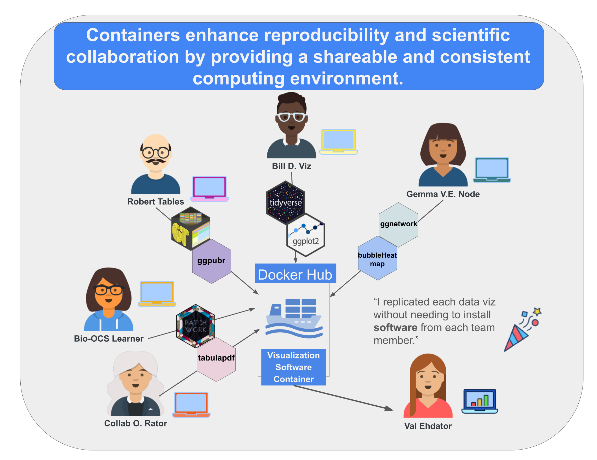
Biomedical Open Case Studies: Using containers for collaborative, reproducible research
Disclaimer
The purpose of the Open Case Studies project is to demonstrate the use of various data science methods, tools, and software in the context of messy, real-world data. A given case study does not cover all aspects of the research process, is not claiming to be the most appropriate way to analyze a given data set, and should not be used in the context of making policy or clinical decisions without external consultation from scientific experts or medical care professionals. In addition, due to size constraints, datasets used within a case study may be a subset of the original/full dataset.
License information
This work is licensed under the Creative Commons Attribution-NonCommercial 4.0 (CC BY-NC 4.0) United States License.
Funding information
This work is funded through the National Institutes of Health, specifically the National Institute of General Medical Sciences: Grant Number 1R25GM160622.
To cite this case study, please use:
Isaac, Kathryn J and Thomas, Oshane and Teichman, Sarah, and Wright, Carrie. (2026). https://github.com/opencasestudies/ocs-bio-containers/. Using containers for collaborative, reproducible research (Version v1.0.0).
GitHub repository
To access the GitHub repository for this case study see here: https://github.com/opencasestudies/ocs-bio-containers/
Keywords
- Keyword 1
- Keyword 2
- Keyword 3
- …Keyword n
Prerequisites
Prerequisites
This case study provides instructions for following along using either Docker Desktop or Docker through a Command Line Interface (CLI). If you are comfortable working with a command line interface, you do not need to install/use Docker Desktop. Note that you can still use command line within Docker Desktop and the application provides additional tools, documentation, and an AI assistant, Gordon.
However, if you are a beginner, or largely uncomfortable working with a command line interface, it is recommended that you follow along with this case study using Docker Desktop.
Throughout the case study, a tab structure will be used. By default instructions for using Docker Desktop will be shown. Click the “Docker through a CLI” tabs if you would prefer not to use Docker Desktop. Installation instructions are provided using this tab structure as well.
You will need the following installed:
- Docker Desktop (install for Windows, for Mac, or for Linux)
- Notepad, Sublime, Visual Studio Code or another text editor
To follow along with this case study, you’ll need the following installed:
- Docker Engine () Need to provide instructions
- Docker CLI () Need to provide instructions
- Have access to and familiarity with a local command line interface (CLI)
- Notepad, Sublime, Visual Studio Code, nano, vim, or another text editor
–
It will also be helpful to be have the following skills:
- basic R skills (many introductory courses can be found online, including this one)
- familiarity with dplyr and ggplot2, or willingness to learn (these dplyr and ggplot2 cheatsheets may be helpful, as well as the original open case studies)
–
For optional, more extensive reproducibility activities, you will need the following:
- minimal Git and GitHub knowledge or experience (see this related case study for necessary skills)
- a GitHub account (see here to signup)
New to GitHub?
See this related case study for necessary skills to get started with GitHub: https://www.opencasestudies.org/ocs-bio-version-control
The following sections specifically will be the most helpful in order to get started with this case study:
- Sign up: https://www.opencasestudies.org/ocs-bio-version-control/#creating-a-github-account
- Installing GitHub Desktop: https://www.opencasestudies.org/ocs-bio-version-control/#installing-github-desktop
- Alternatively, Installing Git: https://www.opencasestudies.org/ocs-bio-version-control/#installing-git
- Connecting your account: https://www.opencasestudies.org/ocs-bio-version-control/#connecting-git-to-github
For following along with later steps in this containers case study, you may want to refer to the following sections:
- (Note that this containers case study will have you create a repository from a “Template repository”, a topic that the version control case study mentions, but does not specifically walk through.)
- Creating a local repository clone: https://www.opencasestudies.org/ocs-bio-version-control/#creating-a-local-clone-of-your-github-repository
- Project organization and typical files to track: https://www.opencasestudies.org/ocs-bio-version-control/#project-organization-with-git-and-github
- Tracking files with GitHub: https://www.opencasestudies.org/ocs-bio-version-control/#stage-commit-push
Need to create a cheatsheet on installation and verification instructions for Docker
Motivation
In this case study, we ask you to imagine that you are working with a collaborator on a scientific project. You receive the following email with a request to help with making some data visualizations for revisions to a manuscript. The study described in the manuscript is a collaborative project spanning several teams. Therefore, each part of the analysis has a container so that the team can easily share computing environments and support reproducibility. Background on the context of the analysis will be provided later in the case study.
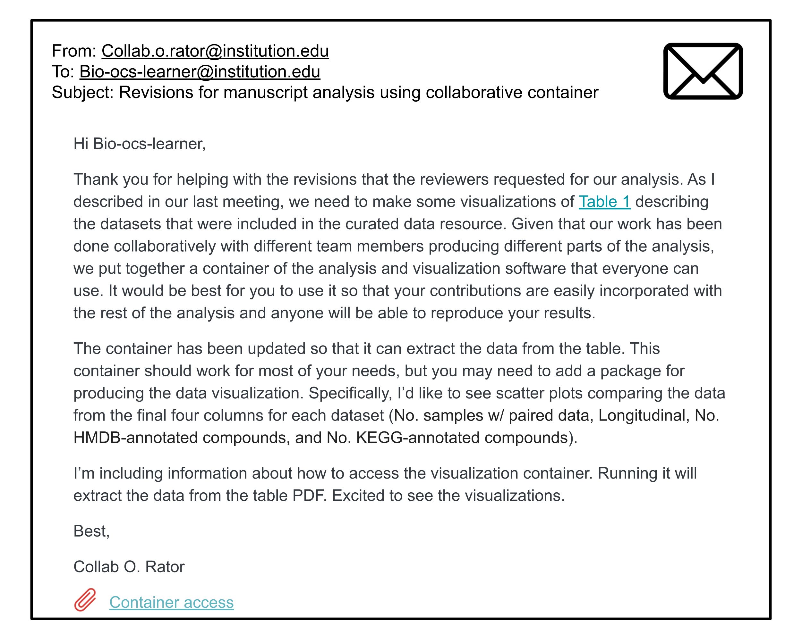
In addition to the background and visualization request, your collaborator sends you the information on how to access both the pre-existing container and the analysis script to get started with the task.
In this case study, we will introduce containers as a tool for increasing the reproducibility of a scientific analysis within a team project, describing why and how to use them to standardize computing environments. We will use Docker to specify the environment used to create several data visualizations of a table describing samples within a curated data resource. You will learn how to use a pre-existing Docker container to run an existing analysis.
Container
A container is a defined packaging of code, dependencies, packages, etc. within an isolated environment supporting the deployment of applications or running of analyses.
You will learn how to further adapt the container to meet your needs by adding package(s) and extending the analysis. Additional topics that will be covered include:
- How to find and share container images.
- How to mount a volume containing version-controlled analysis scripts.
- How to explore output from an analysis performed within a container.
- How to save results from an analysis run in a container.
Main Question
Our main question(s)
- How does one use containers to improve the reproducibility of their work? (Are containers always necessary?)
- How does one use a container and modify a container?
- What are microbiome and metabolome data and how can they be used together?
Learning Objectives
In this case study, we will use Docker to specify and run our container environments in order to create several data visualizations of a table describing samples within a curated data resource.
The skills, methods, and concepts that students will be familiar with by the end of this case study are:
Data Science/Bioinformatics Learning Objectives:
- Discuss ways in which containerization promotes reproducibility within collaborative scientific research.
- Describe how containerization is one of several tools to support the process of increasing the reproducibility of scientific research.
- Employ multiple reproducibility best practices together within the context of containerization (e.g., mounting a volume of version-controlled scripts, sharing a container image).
- Evaluate what should or should not be included in a container.
- Identify contexts where containerization (potentially with Docker) is not appropriate or needed.
- Practice the containerization process to reproduce, extend, and share a data analysis and its results.
- Verify that results or outputs (e.g., messages in logs from analyses run in containers) match expectations.
Statistical Learning Objectives:
- Explain how statistical power is impacted by the number of samples in an analysis.
- Recognize the need and considerations for data harmonization when utilizing multiple data sources.
- Describe how the number of observed metabolites is impacted by the number of samples in a dataset.
Biological/Topical Learning Objectives:
- List the value and potential applications of data collections.
- Explain the limitations and cautions associated with using a data collection for your own work.
- Relate the utility of pairing of microbiome and metabolome data for biological research.
- Build visualizations to communicate the relationship among variables in a table.
Objectives Map
NoteObjectives Map: Where It Is Covered
| Learning Goal | Applications / Practice | Location |
|---|---|---|
| Term related to a learning objective | Description of action or activity that will reinforce that LO | Data Import |
| Another term | Description of its activity | Data Wrangling |
| Another learning objective concept | Another description of this one’s activity | Data Visualization |
Context
What is the metabolome?
The metabolome is a collection of metabolites or low-molecular weight organic (containing carbon-hydrogen bonds) molecules found in a specific sample or organism. Large organic biomolecules in the cell are primarily categorized among four groups: nucleic acids (DNA or RNA), proteins, carbohydrates, and lipids (Cooper 2000). These categories represent large biomolecules (macromolecules) broadly responsible for cellular structure, energy storage, enzymatic catalysis, and genetic information storage and transmission. Metabolites may be by-products from, precursors, intermediates, or building blocks of the various macromolecules. They also include vitamins, organic acids, and other small organic molecules that don’t neatly relate to the larger classes of biomolecules (Karu et al. 2018).
Metabolites may be endogenous or exogenous depending on their origin. Endogenous metabolites originate from the organism or source of the sample while exogenous metabolites originate from outside of the organism / source of the sample. Metabolites may be classified as either primary or secondary metabolites where primary metabolites are required for the life-cycle: growth, development, and reproduction; secondary metabolites are instead used for non-life cycle tasks such as communication/signaling or defense. Note that within the context of the microbiome, a “secondary metabolite” has an additional meaning besides ones that are used for non-life cycle tasks. Secondary metabolites may also refer to metabolites that are from the primary “host” system but are then re-metabolized by the microbiome (Liu et al. 2022). Additionally, metabolites may be water-soluble or water-insoluble, each requiring their own sample extraction techniques (Lu et al. 2017).
Metabolites are detected, identified, and quantified using nuclear magnetic resonance (NMR), enzyme assays, or by pairing compound separation through Gas Chromatography (GC) or Liquid Chromatography (LC) with mass spectrometry (mass spec or MS), and working with the data from those experiments in downstream data processing (Lu et al. 2017). A typical output of NMR and MS experiments are visual graphs called spectra.
Add a figure with an example of a spectrum output
Resources for more details on NMR and mass spec
NMR
For more details on how NMR works, visit this resource from the University of Wyoming about the basics of NMR spectroscopy.
Also consider Marion (2013) for “An Introduction to Biological NMR Spectroscopy” from the Journal of Molecular & Cellular Proteomics.
Mass Spec
For more details on how mass spectrometry works, visit this resource from the Broad Institute explaining what mass spec is, this resource from Scripps Research about the basics as well a more thorough discussion on the relevant technologies or this resource from Michigan State University about the basics with an associated practice problem set.
Additional resources include Garg and Zubair (2026) and Son et al. (2024).
In human fecal samples, a mixture of metabolites would be expected – both endogenous and exogenous – due to physiology (endogenous), dietary intake (exogenous), and gut microbiota metabolism (considered exogenous due to the secondary metabolism of endogenous metabolites) (Liu et al. 2022). Classes of expected metabolites that will be observed include fatty acids (a lipid building block), bile acid (steroid derivatives synthesized from cholesterol), amino acids and protein derivatives, intermediates of carbohydrate metabolism, and undigested dietary sugars (Karu et al. 2018).
Historically, the “low-molecular weight” part of the definition of metabolites has been thresholded with a cutoff for molecules: <1500 Daltons in molecular weight. A recent article (Moreno-Ulloa 2026) proposed a re-definition of metabolites that no longer restricts their identity based on size. However, this definition does not seem to be a widely accepted by the field at this time.
To aide the downstream data processing (because of the vast number of metabolites that have been discovered and studied, their possible locations, and their many associations with different signaling, gene-regulatory, and metabolic pathways or disease implications), dedicated reference databases with known metabolites and related info were developed and are maintained by the scientific community. Some of these databases provide specialized metabolite information across a range of organisms where these metabolites would be found such as spectra from NMR or MS experiments (e.g., MassBank of North America or MoNA) (“MassBank of North America (MoNA) - PubChem Data Source,” n.d.), names, structural, or chemical information about a specific class of metabolite (e.g., LIPID MAPS) (Conroy et al. 2024), or metabolic pathways/networks (e.g., Kyoto Encyclopedia of Genes and Genomes or KEGG) (Kanehisa and Goto 2000; Kanehisa et al. 2025), while others provide a more comprehensive, but organism-specific databases like the Human Metabolome Database (HMDB) (Wishart et al. 2009).
From the 2009 paper introducing HMDB (Wishart et al. 2009), the database is described in the following way:
HMDB is … [an] organism-specific metabolomics database …. It contains spectroscopic, quantitative, analytic and molecular-scale information about human metabolites, their associated enzymes or transporters, their abundance and disease-related properties.
The metabolome of an individual may change over time. Therefore, some research looks at the metabolome of the same research participants over a course of time. This is called a longitudinal study. Research participants within the same study (whether it is longitudinal or not) are termed a cohort.
What are different applications of metabolomics within the scientific field>
Some applications:
- Biomarker identification
- Drug discovery or development
- Clinical Toxicology
- Nutritional studies
- Quantitative phenotyping
- Interpretation and understanding of complex biological processes
What is a curated data resource?
Muller, Algavi, and Borenstein (2022) introduced and explored a curated data resource. Simply, this means a collection of datasets that have been gathered or curated by a group for secondary use within the scientific field. This often goes further than just collecting references of different studies who have made their data available and includes reprocessing the datasets from those studies to make sure that they have been handled in the same way and can be used together in future work. In this case, the researchers from Muller, Algavi, and Borenstein (2022), after identifying studies to include in the data resource had to
- Download the data associated with each study.
- Link the paired data (microbiome and metabolome) for each sample within each study.
- Jointly reprocess all raw data from across the studies
- Annotate microbiome taxons and metabolite molecules according to relevant databases (e.g., KEGG and HMDB)
Recall that the set of samples from a single study is typically referred to as being from a cohort. In a curated data resource, the different cohorts are pooled together.
Add a figure that shows this idea of cohorts being pooled together.
What are possible uses of a data resource?
Curated data resources are useful for a variety of tasks such as:
- Working with more data for greater statistical power
- Perform a meta-analysis to compare results and associations among datasets (See the Version Control case study for an expanded discussion on meta-analyses.)
- Benchmarking tools
- Comparing findings from an analysis to a different dataset (e.g., evaluating the replicability and generalizability of the research) (Schloss 2018)
The need for containerization
Data analysis, especially analysis of large data, relies on computers and the software tools installed on those computers. Depending on the computational needs of an analysis or a researcher’s typical work, that computer or work station may be a personal computer / laptop (Operating system: Microsoft Windows, Apple MacOS, Google ChromeOS, or Linux), a desktop, a Graphics Processing Unit (GPU) server, shared computing resources such as institutional high performance computing (HPC) clusters or supercomputers, or the cloud (Amazon Web Services, Google Cloud Platform, Microsoft Azure). (Wright, n.d.).
Different researchers, especially those located at different institutions, those at different career stages, and those who have different research focuses have different computing environments (potentially differences in operating systems, software, software versions, etc.). Beyond differences in operating systems, different institutions and the IT departments that manage the institution’s computers may have specific setups and guidelines shaping the available software and computing environment for computers at the institution. Individuals with different needs will install and update software differentially. Even team members within the same lab will have different computing environments. Overtime, a single researcher’s computer will evolve as well. Software and operating systems will be updated (sometimes automatically rather than manually) and new software, tools, or applications will be installed. Basically, computers are like snowflakes – they are unique when compared to other computers. They make have similarities, but overall computers are their own unique entity.
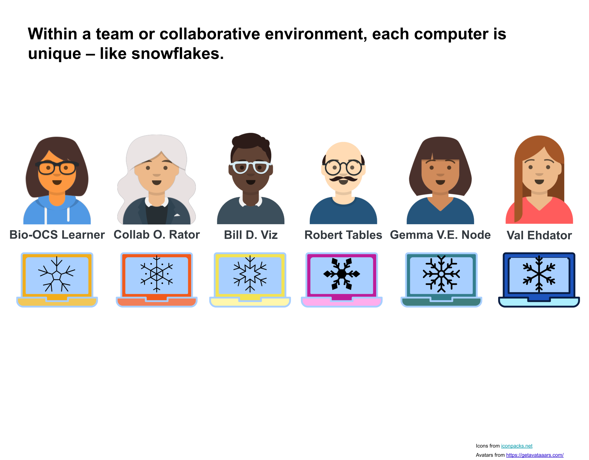
The differences between computers can be problematic for performing and sharing reproducible research [@]. Several examples exist in the literature where different versions of software lead to different results when analyzing the same data [@].
Reproducibility considerations
Reproducible research is where the same methods (code, script, implementation based on description, etc.) can be used on the same data or within the same experimental system by a new researcher to recapitulate the results or findings of the original researcher.
Note that just because a research result is reproducible doesn’t mean that it’s correct or valid. Research can be reproducibly wrong. However, reproducibility is always an important step towards useful, valid, and generalizable scientific discovery.
What is reproducible research within the greater context of scientific discovery?
Repeatability: Same researcher using the original data and process to repeat the same result.
Reproducibility: New researcher using the original data and process to repeat the same result.
Replicability: New researcher using new data with the original process to repeat the same result.
Extensibility: New researcher using the original data and process but expanding the method to repeat the same result but also produce an extension of the result.
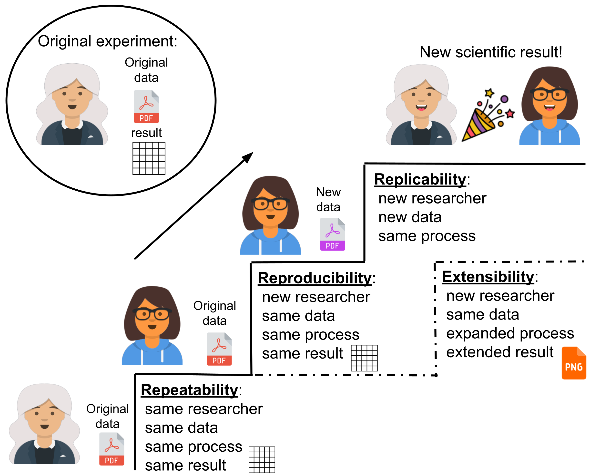
As described in Schloss (2018), preferably a research result can go beyond replicability and also be robust and generalizable.
Generalizability: Using different methods and different data but producing the same overall result.
Robustness: Using different methods but the same data and producing the same overall result.
One way people have tried to get around this challenge is reporting the exact versions of all software that were used. This may at times be sufficient, but other times more precision is necessary. Even if given a list the exact versions of all software and packages or libraries that were previously used, a researcher would need to install any new software and update or downgrade any software they’ve previously installed. Some software requires special dependencies that may not be known to be required until attempting to install a specific package or library and these dependencies may be especially difficult to install due to conflicting, missing, or mismatched version requirements among other software that is already installed. Teams may have a shared computing resource (like an institutional HPC), but even in that case different users have different software and configurations. Geographically dispersed teams can’t realistically mail a laptop to each other to have a standardized computing environment.
Therefore, containers are often the solution used to standardize the computing environment within a team. Containers provide a standardized computing environment for everyone using it no matter what the software landscape of their personal laptop or workstation looks like.
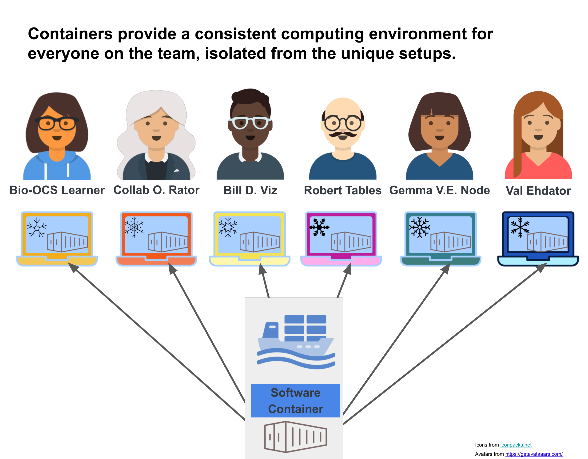
Introduction to Containers
Before we start to address your project with Collab O. Rator, we will provide an introduction to containerization with Docker. In this section, you will learn more about what containers are, why they are useful, and when they may be unnecessary. In additional you will learn about different software tools or technologies that support containerization, when certain technologies are more appropriate to use, as well as how to find, share, and work with containers. Towards the end of this section we will return to the microbiome-metabolome data collection project.
What is a container?
- Describe images, containers, and other vocabulary around the subject such as Dockerfile, building an image, etc.
- make a diagram showing how Dockerfile relates to building an image … (possibly borrow or adapt the crane one that Candace made for ITCR containers course)
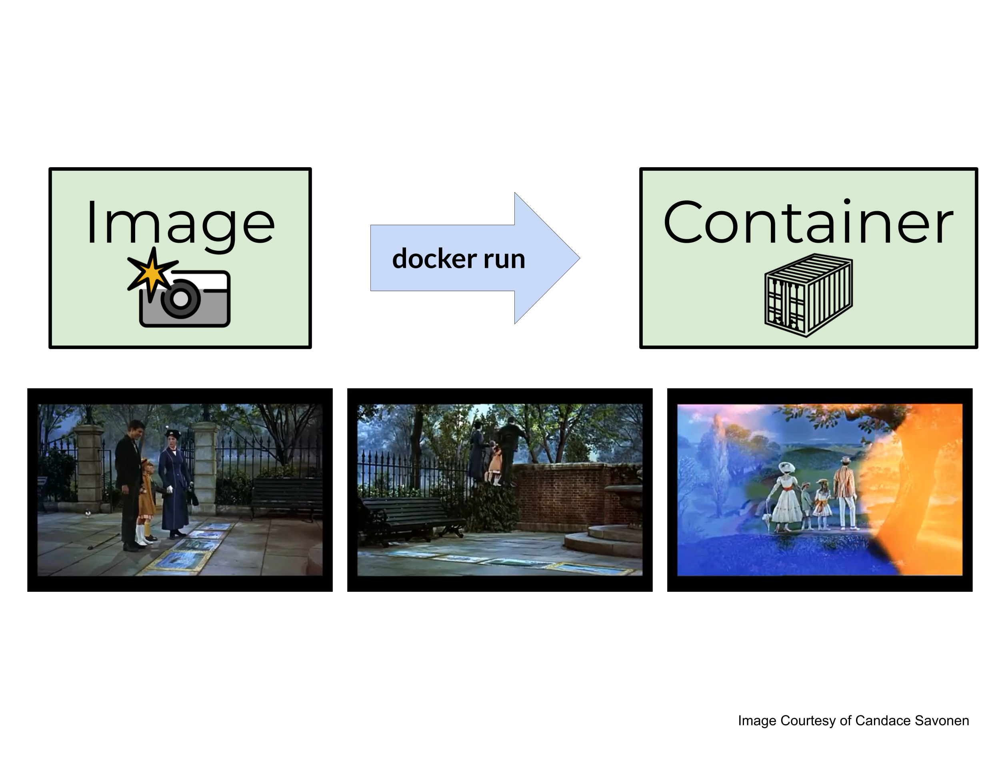
Containerization Analogies
The containerization process can be thought of like working in a kitchen for dinner service or a holiday meal.
![Diagram showing how working in a kitchen can be an analogy for the containerization process. Dockerfiles specify the recipe repertoire and kitchen organization standards while building is like the preparation process resulting in standardized resources, ready for active cooking, but not actively being used - an image. Running the image results in a container or an active kitchen where cooking is happening. It is like turning on the burner. In the running process you may mount a volume of scripts and data or in the kitchen this would be specific recipes. Finally, container clean up is removing the heat and resetting the environment by storing ingredients and cleaning up the space.](index_files/figure-html//1EFnuBBFlqjod7S1OlOoj_9-29nPO3ZhL6iJ-Pf8xzpg_g3f88b06ed70_0_0.png)
In the kitchen you have a recipe or a set of recipes each listing the necessary ingredients to stock as well as how much of each ingredient is needed and if there’s any special preparation or considerations for an ingredient (e.g., chopping or peeling). Recipes also provide detailed instructions for the environment (desired pans, cooking temperature, time). Additionally, a kitchen has specific locations for specific tools, pans, and utensils – perhaps there’s a map or binder specifying where things are located and how they are to be cleaned and stored. All of these together specify how the kitchen should be provisioned.
The Dockerfile is like a recipe and kitchen binder specifying what dependencies, packages, and environmental variables (ingredients) are needed, in what order, and what the environment needs to look like. While a Dockerfile contains a layered, step-by-step definition of the computing environment, it doesn’t contain a step-by-step definition of how a specific analysis will utilize the computing environment.
Working in a kitchen, often the area and ingredients may be prepped before any combining, cooking, or baking actually happens. Pans, utensils, and tools are all cleaned and stored in specific, known locations. Ingredients that need peeled, chopped, or some other special preparation are prepared in those ways. This preparation allows for a more efficient or easier combination of ingredients within the cooking process. Everything is prepared (according to kitchen station expectations and the instructions for ingredients in the recipe), just sitting at the ready, but not actively being used. This is termed “mise en place” (pronunciation: /ˌmiz ɑn ˈplɑs/ or meez ahn PLAHSS).
The “build” process (Dockerfile –> image) is the preparation of the environment and ingredients: the cleaning, stocking, chopping, dicing, peeling, measuring, etc. which leads to the docker image where everything is in a static, read-only, prepared state. The docker image is like “mise en place”.
The step-by-step instructions for specific dishes, and their utilization of specific ingredients may be needed as well (analysis scripts). Perhaps unusual ingredients (data) for special dishes are needed. These are not part of the building process, but instead are brought into the kitchen (container) once everything else is ready. The recipes, kitchen station and prep guidelines (Dockerfile), and prepared environment, and ingredients (image) provide a static and standardized setup – one that can be used by any set of cooks or chefs. The mounted volume within a running container brings in the flexibility to use the static and standardized setup for your specific needs in your specific way.
Once the kitchen is ready, they fire up a stove top, heat an oven, or combine ingredients that will work together in a bowl. With the addition of heat or mixing of ingredients, the cooking process itself begins. Everything that was defined in the recipe or kitchen station instructions is at the kitchen’s disposal. It’s too late to go get different ingredients or supplies.
The “run” process (image –> container) is like supplying the heat – creating the environment where the cooking and combining of ingredients can happen – the container. In the running container or environment, each of the ingredients (packages) are at your disposal, ready to use. Your analysis scripts and specific data will be incorporated here by mounting a volume during the “run” process.
Within the running container, you use the packages together with any data or analysis scripts to perform an analysis or provision a tool. Everything defined in the Dockerfile is at your disposal to use in the running container. And the running container is isolated from the rest of your computer – so only what is defined in the Dockerfile is available unless you’ve mounted a volume to bring in specific data and scripts.
The eventual meals produced by the kitchen are like the finished product: a tool, analysis, result, etc. that can be shared. And finally, as with any kitchen endeavour – there has to be a clean up. Perhaps a container is paused or stopped (e.g., the heat is turned off but the pan is still available on the stove). Then eventually the container is removed – (e.g., dishes are cleared, cleaned, and put away). Images may also be removed to save space – like clearing out or storing unused ingredients.
In a kitchen, you may make multiple courses for a meal: an appetizer, the main course, and dessert. Each of these have their own process: own station in a professional kitchen, own set of recipes, own prep needs, and own tool needs. However, the end product is the whole meal. In a similar way, an analysis may have multiple parts each supported by its own container, all working together to produce the overall end product.
The containerization process can be thought of like hotels.
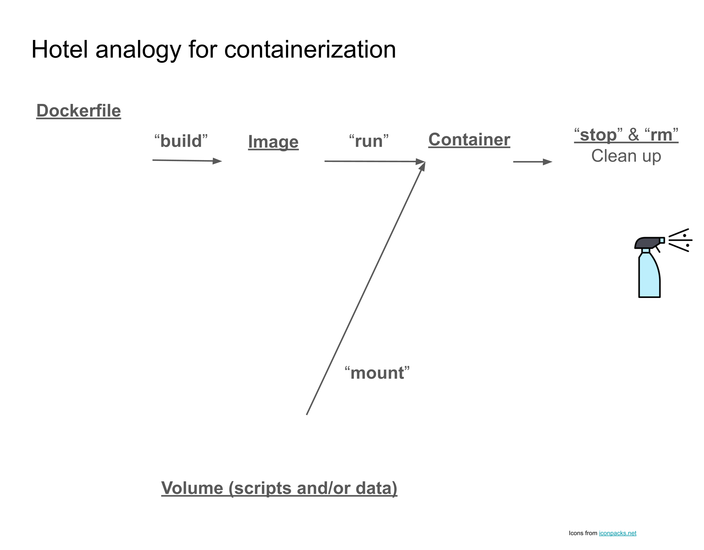
Add an analogy about hotel rooms
The containerization process can be thought of like building with Legos.
Add an analogy about building legos
Why containers?
- Describe why
- Describe that a container isn’t always necessary, but more on this later…
What are general use cases for containers?
- Developing: starting from the beginning, setting up a base image, specifying dependencies, actual packages of interest
- Finding: search and find a container that meets your needs (you may have to modify it a bit/add a couple other packages)
- Specified: A collaborator sends you a container and you need to use it (or add a package or otherwise modify it in some way to suit your needs)
The last of these scenarios is the context for this case study.
When is a container especially useful?
Especially if you need to move an analysis to another machine or environment like an HPC or the cloud
–> Discuss Singularity and Apptainer for HPCs in this section
–> Include why Docker is not appropriate for HPCs
–> Recommendations for the cloudIf a collaborative team is working on a large analysis within a workflow or in different environments
If a collaborative team is having difficulty replicating results within the team
If dependencies are causing nightmares
When might a container be unnecessary?
When is a container overkill? Do you really need a container or will session info work?
How do you work with a container?
Options for interacting with the container
How do you work with a container and run an analysis with a container?
- Terminal / Command Line
- If you only have a Dockerfile, you need to use this to build the image
- Docker Desktop
- An interactive Integrated Development Environment (IDE)
- In combination with GitHub Actions
Sometimes the process of running a container and interacting with it involves a combination of these options (because the container installs an IDE) that once you’ve run the container, you then develop an analysis within an IDE.
We’ll primarily walk learners through using Docker Desktop though we’ll likely use a tab structure to give learners the optional methods to use Terminal / Command Line. We will also provide a side quest about using a container that installs an IDE and suggest an advanced homework for the final option of combining containers with GitHub Actions.
The reason we’re primarily walking learners through using Docker Desktop is because
- It separates out images and containers which will support learners trying to learn the difference
- Learners can create files, as well as import and export files within the files tab as opposed to mounting a volume
- Learners can also mount a volume which is an option
- Learners can easily see how many images and containers they have and while they are learning this can be extremely helpful so they don’t tax their systems too much
- Docker Desktop has its own documentation that we can point to
Options for interacting with data within a running container
As for how we’re working with data. Our options are to
- mount a volume (directory) from our system that has data (and possibly scripts) in it.
cpfiles to and from the container- Create an analysis script within the running container and edit it within the container. Use a URL to get the data PDF from within the container and create/keep raw data and intermediates within the container that won’t be shared. Finally, creating plots within the container that we’ll have to save to our system.
While we will show examples of all of these, our primary interest is to work within the third option as much as possible. When we ran an event at a medical center, the devices were unable to mount data so we’d like to provide options separate from that as much as possible.
What are the data?
The data comes from Table 1 in Muller, Algavi, and Borenstein (2022). Table 1 describes the curated gut microbiome-metabolome datasets that this study aggregated in order to curate a resource for the research community. This table is a 14 row 7 column table with columns showing
- the name of each dataset
- which reference in the study relates to that data
- a brief description of the cohort within that study
- the number of samples with paired fecal microbiome-metabolome data within that cohort
- whether the study contained longitudinal data
- the number of HMDB annotated compounds
- the number of KEGG annotated compounds
Each row in the table is providing data for that source dataset itself. Figure 1 in Muller, Algavi, and Borenstein (2022) provides more information on the overlap between datasets (e.g., in how many datasets were observed HMDB annotated metabolites present).
![Table 1 from Muller et al 2022. Table 1 describes the curated gut microbiome-metabolome datasets that this study collected and analyzed as part of the meta-analysis. This table is a 14 row 7 column table with columns showing the name of each dataset, which reference in the study relates to that data, a brief description of the cohort within that study, the number of samples with paired data within that cohort, whether the study utilized longitudinal data, as well as the number of HMDB annotated compounds and finally the number of KEGG annotated compounds in each study.](index_files/figure-html//1EFnuBBFlqjod7S1OlOoj_9-29nPO3ZhL6iJ-Pf8xzpg_g3f5db0d7ede_0_25.png)
After using tabulapdf to extract the table from the PDF (see the Data Import section) and some basic wrangling with tidyverse (see the Data Wrangling section), we will extract a tidy dataframe with all of the columns displayed in the original table, but those boxed in purple and listed below are the most important for our visualization task (as outlined in Collab O. Rator’s email).
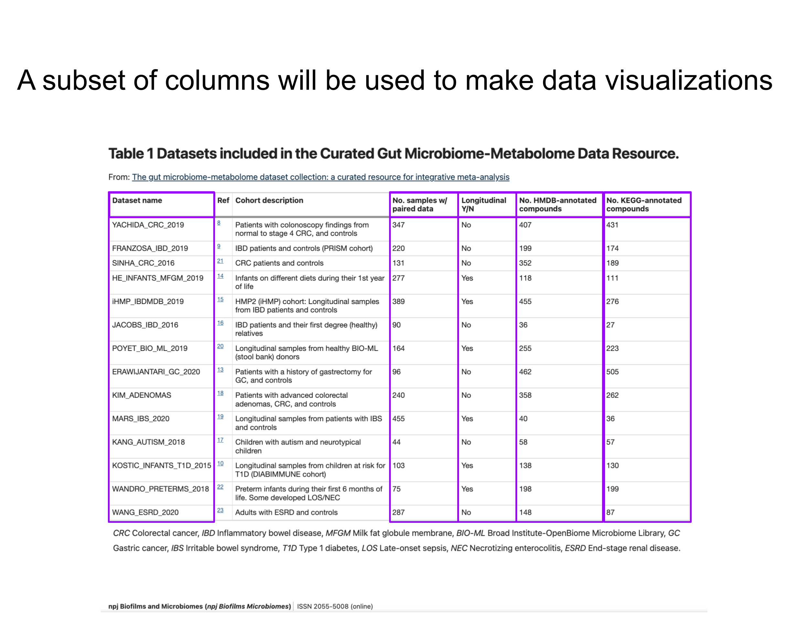
| Variable | Details |
|---|---|
dataset_name |
A character/string identifying the dataset (often containing author, studied illness, and year of the study). |
num_paired_samples |
The number of samples within the dataset that have paired fecal microbiome-metabolome data. |
longitudinal |
A character/string reporting whether that dataset has longitudinal data (“Yes” or “No”). |
hmdb_annotated_compounds |
The number of metabolites that were identified within that dataset and annotated with the Human Metabolome Database (HMDB) (Wishart et al. 2009). |
kegg_annotated_compounds |
The number of metabolites that were identified within that dataset and annotated with Kyoto Encyclopedia of Genes and Genomes (KEGG) (Kanehisa and Goto 2000; Kanehisa et al. 2025). |
Limitations
There are some important considerations regarding this data analysis to keep in mind:
This case study specifically uses the technology Docker to build containers and run analyses within these isolated environments, on a local machine.
Limitations regarding containerization and the scope of this case study:
This case study does not describe how to:
- develop containers from the ground up
- use containers within a workflow using tools like Nextflow or Workflow Description Language (WDL)
- use containers to support a remote analysis (e.g., in the cloud)
- use containers to deploy or support an application
- use technologies other than Docker such as Apptainer or Singularity
Docker is a widely used tool for containerization. However, it is not the most appropriate tool for all use cases and within all contexts. For example, institutional High Performance Computing (HPC) often utilizes Apptainer due to its need of fewer user privileges (e.g., greater security). As a software tool, the long-term availability of Docker is not guaranteed. Containerization and the principles discussed within this case study will remain integral to reproducible research especially for dispersed teams. However, the specific technologies used to implement these principles may change over time and within different contexts.
Limitations regarding the data analysis and using aggregated data:
This case study focuses on practicing best practices in using containers to support reproducible and extensible scientific analyses. To support this goal, the example analysis is a straightforward visualization of narrow scope data. There could be additional context and characteristics (e.g., quality) about the data that are not considered or visualized within this analysis.
In addition, the harmonization of aggregated data requires careful consideration to ensure that data from multiple, different sources is both compatible and comparable (Cheng et al. 2024). Steps involved in data harmonization include mapping related variables across datasets, adjusting scales, units, or formats for proper comparison, and reducing bias due to differences in data collection. Harmonization is not performed within this case study. Typically, meta-analyses are synthesizing summarized information rather than aggregating the underlying, raw data (Cheng et al. 2024). If using this curated resource to aggregate the underlying data, carefully consider what data harmonization may be appropriate (Nan et al. 2022).
Ethical Considerations
There are some important ethical considerations when working with containerization, as well as when working with clinical/health related data. Additional ethical considerations are relevant when working within a collaborative team environment and with secondary source data (data collected by others).
Containerization and clinical/health data considerations:
- When defining and sharing a container image, make sure to never include personally identifiable information (PII) or protected health information (PHI).
- Even if you are sharing a Dockerfile or image using a private repository or in private communication within a team setting, do not include PII or PHI.
- Data that is considered PII or PHI includes names, dates of birth, contact information, account or health plan numbers, IP addresses, and medical records. You can read more about PII and PHI and ethical data handling practices in this course with broader information regarding proactive and ethical data management and sharing can be found in this course.
- Container images should be minimal and non-interactive (e.g., able to install without user interaction).
- In general, do not include any data (even if it’s not PHI or PII) within an image that you share (ensuring a minimal image).
- Remove unnecessary packages or dependencies (ensuring a minimal image).
- Avoid adding software like
gitthat would require user credentials or authentication to install or setup (ensuring a minimal, non-interactive image). - Do not include any credentials within the definition of a container image (ensuring a minimal, secure image).
- Only use containers from known and verified sources.
- While images provide a static snapshot of a computing environment, the security or health of a container isn’t necessarily static and may need to be maintained over time.
- Only use specific technology containers within the appropriate contexts (e.g., do not use Docker on an Institutional HPC unless explicitly allowed/supported by the institution).
- Use of open-source software that is broadly accessible is a part of ensuring findable, accessible, interoperable, and reusable (FAIR) science (Wilkinson et al. 2016; Barker et al. 2022). Docker is consistent with these principles because it is a partially open-source software that is free to use for individuals and small organizations. Containerization of analysis software and depositing it in repositories further aligns with these principles by making tools and analyses more accessible and transparent to others.
- Keep comprehensive documentation for scientific projects regarding sources and handling of data as well as steps in the analysis process. Further, be transparent, sharing version-controlled records of analyses. Containerization is just a part of reproducible science (Sandve et al. 2013).
Collaborative team considerations:
- For projects performed within large, collaborative teams performing transparent science can be extra challenging. In addition, properly crediting contributions from team members may be difficult. Large teams may also struggle to utilize resources efficiently. Containerization offers a tool for large teams to combat this efficiency struggle, ensuring that all team members can access the same computing environment in order to reproduce, validate, or extend analyses. For more details about ethical considerations for science performed in large team settings consider Petersen, Pavlidis, and Semendeferi (2014).
Use of secondary and/or clinical/health data considerations:
- Use of secondary data (data collected originally by others), may need to be studied to ensure that researchers understand the variables within the data. Especially if aggregating multiple secondary sources of data, special considerations may be necessary to ensure that the data is being combined in comparable and compatible ways (Cheng et al. 2024).
- Use of secondary data, especially underlying clinical data (e.g., from patients or research participants) requires consideration on how that data was collected and shared and the consent of participants (Sterling 2011).
Packages and Setup
Before we get into fetching images, running containers, and running analyses, we want to describe the R packages that we’ll use in this case study, or that are used within the analysis scripts for the project with Collab O. Rator.
| Package | Use |
|---|---|
| here | Constructs paths within project |
| tabulapdf | Extract data from a PDF |
| tidyverse | Data wrangling |
| ggplot2 | Visualize data |
| patchwork | Combining multiple plots |
The first time we use a function, we will use the :: to indicate which package we are using. Unless we have overlapping function names, this is not necessary, but we will include it here to be informative about where the functions we will use come from.
tabulapdf is an example of a package that you may want to use a container for because of dependencies. tabulapdf requires Java which you may or may not have installed in your system. Though dependency needs can get much more complex.
This case study is focusing on how to work with containers while performing a data analysis (the project from Collab O. Rator described earlier in the Motivation section). Therefore, every subsequent section will have two portions:
- Container Infrastructure Activities: Exploring container specific concepts and performing containerization tasks to support the project.
- Container Application Activities: Working with data with the container (whose infrastructure you’ve set up by doing the Container Infrastructure Activities).
| Portion of section | Description of activity |
|---|---|
| Container Infrastructure | “Importing” a container image from Docker Hub as well as retrieving analysis scripts from GitHub; then running the image while mounting the volume with the analysis scripts. |
| Container Application | Using the running container (retrieved in the previous portion of Data Import) to “import” the data from the PDF version of Table 1 of the paper. |
| Portion of section | Description of activity |
|---|---|
| Container Infrastructure | “Exploring” the Dockerfile of the container image retrieved from Docker Hub in the Data Import section. |
| Container Application | “Exploring” the raw data which was retrieved from the PDF version of Table 1 of the paper in the Data Import section. We will discuss how containers can be a part of this. |
| Portion of section | Description of activity |
|---|---|
| Container Application | Using the running container, “wrangling” the raw data that was retrieved and explored in previous sections according to what was observed in the Data Exploration section. |
| Container Infrastructure | Wrangling the Dockerfile for the container image to add a package that will help with the Data Visualization task. |
| Portion of section | Description of activity |
|---|---|
| Container Infrastructure | Building the modified Dockerfile from the Data Wrangling section, running the image while mounting the volume with the analysis scripts. Additionally, learners will “visualize” this containerization process as a flowchart. |
| Container Application | Using the running container (set up in the previous portion of Data Visualization) to “visualize” the wrangled data from the Data Wrangling section. |
| Portion of section | Description of activity |
|---|---|
| Container Application | Using the running container, adjusting the “analysis” to include a summary statistic about the wrangled data and visualization as well as a script that runs the whole process so that the analysis can be more easily validated. |
| Container Infrastructure | Sharing the container, adjusted “analysis”, and appropriate documentation with collaborators. |
In all cases, code and scripts for the tasks within the Container Application portions will be provided for learners since the focus of this case study is how to work with containers, not how to code with R.
Data Import
Container Infrastructure
In order to extract the data from the table in the PDF and then work with that data to build data visualizations, we will first have to retrieve and use the container that Collab O. Rator mentioned. Otherwise, we would (likely) have to install the tabulapdf package and any of its dependencies that we don’t have on our system. And we may not have the same versions of the software and dependencies that other team members have. Using the container ensures that we have the same software as other team members.
Step 1: Starting docker
To pull the docker image, docker must first be running.
If you try to use a docker command like docker pull without first starting docker, you’ll see an error message about “failure to connect” and recommending you check if the “daemon” is running. Docker Desktop can be resource intensive, so it’s common to close Docker Desktop or stop docker from running in the background when not using it, and therefore, an important first step when working with Docker containers is to make sure docker is running.
Step 2: Pulling the container image from Docker Hub
Recall that a container image is the main way that containers are shared and these are often stored in registries like Docker Hub. For this activity, the data visualization container image is stored on Docker Hub by the bioocs organization. Specifically the image is named ocs-bio-containers-main with a tag of “main”.
At the top of the Docker Desktop GUI window, in the search bar, type the name (or part of the name) of container you want to pull in order to search it and pull the image.
- Type
ocs-bio-and several images from thebioocsorganization will be listed. - Find
bioocs/ocs-bio-containers-basein the list. - Verify that the “Tag” pull-down menu shows “main” as the selected option, otherwise choose it.
- Click the “pull” button.
In your command line interface, use the following command to pull the docker image from Docker Hub.
Note that the command line interface will display progress messages for each layer of the image followed by confirmation or a status update that the image was successfully pulled.
Finding containers in a registry (e.g., Docker Hub)
You may want to look for a container that has packages that meets your needs, or you may know the organization name or a partial name of a container image and want to browse images from that organization or with matching names. In those cases, you’ll want to search a registry like Docker Hub. Docker Hub isn’t the only container registry. This article describes additional registries.
Not all containers in a registry can or should be trusted. Look for containers from verified or trusted sources. These often have some sort of a badge (e.g., “Verified Publisher” or “Docker Official Image” on Docker Hub). tidyverse images from rocker (a base image we use throughout this case study) is from a “Sponsored OSS” – an open source project sponsored / recognized by Docker. Other containers may be mentioned in a published paper or be from an organization / lab that you collaborate with. Not all trusted sources will have a badge. Look at the organization about page to see the company name and if a reputable website is linked (for example: bioconductor organization).
Step 3: Running the image
Now that we’ve pulled the container image, we will want to run the image to create a container. We have pulled the data visualization image, but that doesn’t give us the data from the PDF table or even software that we can use in R yet. Once we run the image to create a container, we have access to the software within the container.
If all you need is software and don’t need data or analysis scripts (stored in a file or directory), you can simply run the container to set up the environment with the specified software. Because a container is an isolated environment, once it is running, you won’t be able to add data or analysis scripts into the environment. Therefore, if you need data or analysis scripts, you will need to point the container to the data/script location when you run the image so that they are included in the container environment. This is called mounting a volume.
We need data analysis scripts, so we will need to mount a volume when we run the docker image. We will first download the data analysis scripts that we want to have access to in our container.
Step 3a: Downloading version-controlled analysis files
Because the focus of this case study is working on a data analysis within the containerization framework and not on developing the data analysis itself or writing R and bash scripts, the analysis scripts to support this data analysis are provided for you in a scaffold GitHub repository.
You can interact with the scripts within this scaffold GitHub repository in one of two ways:
- Option A: Download the analysis scripts in a
.zipfile - Option B: Set up a new GitHub repository, using the scaffold as a template and clone that repository locally.
Option B provides an opportunity to practice more advanced reproducibility best practices: version-controlling an analysis. However, this is merely an a supported alternative rather than a requirement to follow along with this case study.
Reproducibility considerations
Setting up a project directory for an analysis is a best practice for reproducible data analyses (Wilson et al. 2017).
A typical project directory will have a name associated with the project (assuming that a project is version controlled, this is the repository name). The project directory should have different subdirectories for the analysis scripts, the data, and the results. Analysis scripts should be numbered to show their order (e.g., 01_extract_data.R, 02_wrangle.R, etc.). The data subdirectory should have additional subdirectories separating out raw or imported data from wrangled data. Likewise, the results directory should have additional subdirectories separating the different types of results (e.g., plots).
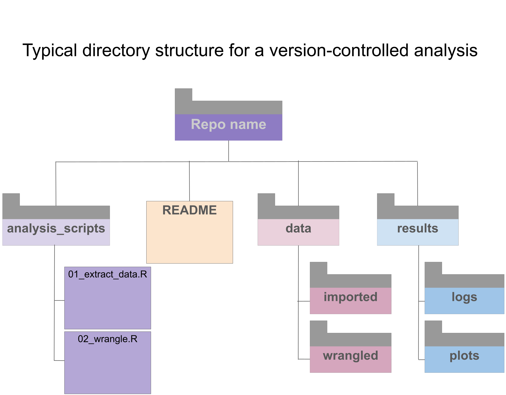
This scaffold directory doesn’t match the suggested project directory structure from above at first appearance. It only contains the directory for analysis_scripts (and a directory with another set of scripts called continued_learning_scripts). The data and results directories as well as their subdirectories are automatically created by the scripts to store the outputs if the directories don’t already exist.
Use this link to download the analysis scripts
You will want to “unzip”, “extract”, or “decompress” this file (Mac instructions, Windows instructions). You can move the resulting file or keep it in your Downloads folder, but you will need to know where it is on your computer for the next step.
This options allows you to practice more reproducibility best practices, specifically version-controlling an analysis.
Reproducibility considerations
Version controlling your analysis scripts is a best practice for reproducible data analyses.
Navigate to the scaffold GitHub repository on your web browser: https://github.com/opencasestudies/ocs-bio-containers-scaffold. Click the green “Use this template” button in the top right, and select “Create a new repository” option from the dropdown menu.
On the new window “Create a new repository”, fill in a repository name under “General” (possibly something like “containers-case-study-yourinitials”). Because this is using a template to create a new repository, this screen doesn’t have as many options as you might see if you are creating a new repository from scratch on GitHub. Click the green “Create repository” button on the bottom right.
It will take a little time to generate the new repository. Once your new repository is generated from the scaffold template, click the green “<> Code” button to clone the repository for a local copy. Refer to and follow the instructions from the Version Control case study if needed.
You will need to know where this local copy is located (e.g., what directory it is in) on your computer for the next step.
Create a branch so that any changes you make to scripts can be committed and pushed to your remote repository as a pull request later.
Step 3b: Running the container image
Because a container is isolated, it won’t have access to files (scripts, data, or locations to store outputs) unless you specifically mount a volume. Therefore, we will want to point the container to the files that we’ve just downloaded in Step 3a when we run the image. This gives the container access to the project directory (and our scripts).
If we don’t mount the volume when we run the image, we won’t have access to those files in the running container (and can’t grant access to them within a running or paused container), and would have to create directories and scripts within the running container. Then we wouldn’t be able to track revisions to scripts or easily view / save outputs.
Running the container instructions (including mounting the volume)
Enter the following command in your CLI, replacing [locationOfAnalysisFiles] with the location of your analysis files (e.g., ~/Downloads/ocs--bio-containers-scaffold)
At the end of some progress messages, you should see [services.d] done. meaning that the container is ready for use.
Container Application
Extracting data from a PDF within a running container
Running the analysis
Using the tabulapdf package, we will extract a raw, unwrangled version of Table 1.
Update this to grab the script and show it with the shortcode notation
01_extract_data.R
#!/usr/bin/env Rscript
library(tabulapdf)
library(here)
library(readr)
#extract the data
raw_table <- tabulapdf::extract_tables("https://www.nature.com/articles/s41522-022-00345-5.pdf",
pages = 2,
method = "stream",
col_names = FALSE
)[[1]]
#output information about the extracted data
cat("Dimensions: ", paste(dim(raw_table), collapse = " x "), "\n")
cat("Number of NAs: ", sum(is.na(raw_table)), "\n")
#save the data
output_dir <- here::here("data", "imported")
if (!dir.exists(output_dir)) {
dir.create(output_dir, recursive = TRUE)
}
save(raw_table,
file = here::here(output_dir,
"raw_table1.rda"))
readr::write_csv(raw_table,
file = here::here(output_dir,
"raw_table1.csv"))
Discuss what the above script is actually doing. Note that we’re using a URL to read the PDF rather than including the PDF in the mounted volume.
Walk through how to run the container in order to run the analysis and extract the data.
Running the analysis instructions
Running the analysis instructions
Inspecting the output
In the script that is grabbing the data, we output a few messages about the dimensions, number of NAs, etc about the data we have extracted. We also save an rda and csv version of the raw data. Where do we see those? Do we see those?
Looking at the outputs (new folders, files, and log messages)
Looking at the outputs (new folders, files, and log messages)
Dimensions: 25 x 7
Number of NAs: 80
Activity – Using the container from the collaborator to get the Table 1 data.
Give side quest instructions on how to interact with a file system if you can’t mount a volume for whatever reason
Question Opportunity
Why do we need a script to look at a PDF file, extract, and eventually wrangle the data from the PDF file instead of just visually inspecting the PDF file and creating a table in a spreadsheet or other file type that we can just directly read-in for later steps?
Possible Answer
Reducing manual steps and rather automating them is an important step towards more reproducible science. In this specific case for data retrieval, data retrieval through automation is not only more transparent (regarding how things were done), it also can be less error prone than manual entry.
For Docker Desktop:
- run the container
- navigate to the exec tab
- set-up a file structure (motivate this by it being important to have a file structure in a data analysis, pointing to ITCR reproducibility resources):
mkdir opt/case_study_analysis plots/ data/imported data/wrangled
touchan01_extract_data.Rscript inopt/case_study_analysis- navigate to the files tab
- right click on the
01_extract_data.Rscript and click edit - copy paste the following code into the script
- click save
- navigate to the exec tab
- use
Rscript 01_extract_data.R– adjusting based on script location and learner’s file location. - notice that it outputs “Dimensions: 25 x 7”
- notice that there is an rda file in the
data/importedfolder (which we canls data/importedto see)
Data Exploration
Container Infrastructure
We’ll utilize this section to explore the Dockerfile specifically answering “What’s in a container?”
Dockerfile
FROM rocker/tidyverse:4.5.3@sha256:913d87bd9b81480b97bd4fc18e619e71d12b0a034bc80bb841830ac10278fd1a
ENV DEBIAN_FRONTEND=noninteractive
# Install Java + minimal system libs needed for your R packages
RUN apt-get update \
&& apt-get install -y --no-install-recommends \
openjdk-11-jdk \
libpng-dev \
libicu-dev \
libpcre2-dev \
&& R CMD javareconf \
&& rm -rf /var/lib/apt/lists/*
# Install R packages
RUN install2.r --error --deps TRUE \
rJava \
tabulapdf \
here \
bubbleHeatmap \
ggnetwork \
ggpubr \
gt
Going forward we’ll use an approach like the one above to load the files from this repository rather than copy/pasting code and needing to update it in multiple places.
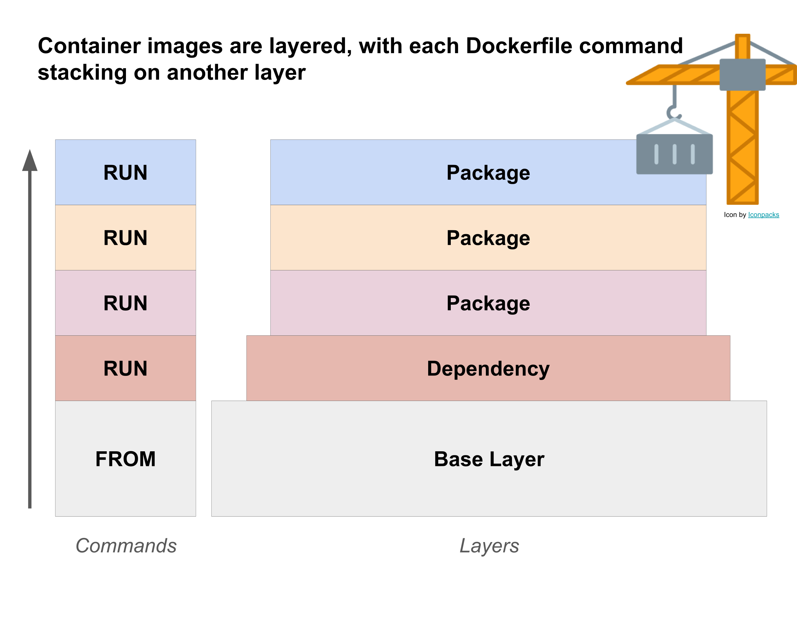
- Notice there are layers
- Point out dependencies (Side quest: how do we know what dependencies we need?)
- The software or packages of major interest
- Keeping it modular or small and having multiple containers for the same project/different substeps (note that in this case study we’re using the data visualization container the team is using…it’ll have some visualization packages that are reasonably being used by the team for visualizations, but not the visualization steps within this case study)
We’ll also utilize this section to explore what’s not in a container! – Data! (noting that yes we’re storing some intermediate data in the container while we’re using it, but we won’t include that in a Dockerfile or an image / container we share with others)
Side quest: We can even explore the file structure of the running container in Docker Desktop a bit and connect how those directories are related to what could be in the Dockerfile. In this case the directory structure is controlled by the mounted volume analysis scripts, but a Dockerfile could also specify directory structure.
Side quest: what if you wanted to spin up an IDE with your container?
Include instructions on viewing the file structure within the running container
Include instructions on how to create / interact with files within the running container
Include instructions on viewing the file structure within the running container from the Command Line
Include instructions on how to create / interact with files within the running container from the Command Line
Side quest: Discuss how mounting data/scripts allows for version controlled files and that while editing the files in the file tab is possible without mounting a volume, it’s not best practices (though it may not always be possible to mount files depending on security settings on a system)
Container Application
Using the tabulapdf package to extract the data table from the research study PDF, we defined a Data Frame (raw_table) that will need some wrangling to make it more accurately reflect Table 1 from Muller, Algavi, and Borenstein (2022).
# A tibble: 25 × 7
X1 X2 X3 X4 X5 X6 X7
<chr> <dbl> <chr> <lgl> <chr> <dbl> <dbl>
1 YACHIDA_CRC_2019 8 Patients with colonosc… NA No 407 431
2 <NA> NA normal to stage 4 CRC,… NA <NA> NA NA
3 FRANZOSA_IBD_2019 9 IBD patients and contr… NA No 199 174
4 SINHA_CRC_2016 21 CRC patients and contr… NA No 352 189
5 HE_INFANTS_MFGM_2019 14 Infants on different d… NA Yes 118 111
6 <NA> NA year of life NA <NA> NA NA
7 iHMP_IBDMDB_2019 15 HMP2 (iHMP) cohort: Lo… NA Yes 455 276
8 <NA> NA samples from IBD patie… NA <NA> NA NA
9 JACOBS_IBD_2016 16 IBD patients and their… NA No 36 27
10 <NA> NA (healthy) relatives NA <NA> NA NA
11 POYET_BIO_ML_2019 20 Longitudinal samples f… NA Yes 255 223
12 <NA> NA ML (stool bank) donors NA <NA> NA NA
13 ERAWIJANTARI_GC_2020 13 Patients with a histor… NA No 462 505
14 <NA> NA GC, and controls NA <NA> NA NA
15 KIM_ADENOMAS 18 Patients with advanced… NA No 358 262
16 <NA> NA adenomas, CRC, and con… NA <NA> NA NA
17 MARS_IBS_2020 19 Longitudinal samples f… NA Yes 40 36
18 <NA> NA IBS and controls NA <NA> NA NA
19 KANG_AUTISM_2018 17 Children with autism a… NA No 58 57
20 <NA> NA children NA <NA> NA NA
21 KOSTIC_INFANTS_T1D_2015 10 Longitudinal samples f… NA Yes 138 130
22 <NA> NA for T1D (DIABIMMUNE co… NA <NA> NA NA
23 WANDRO_PRETERMS_2018 22 Preterm infants during… NA Yes 198 199
24 <NA> NA of life. Some develope… NA <NA> NA NA
25 WANG_ESRD_2020 23 Adults with ESRD and c… NA No 148 87Rather than having 14 rows and 7 columns of data as we expected, we observe a Data Frame with 25 rows of data. And while our Data Frame does have 7 columns, one of them (X4) is all NAs.
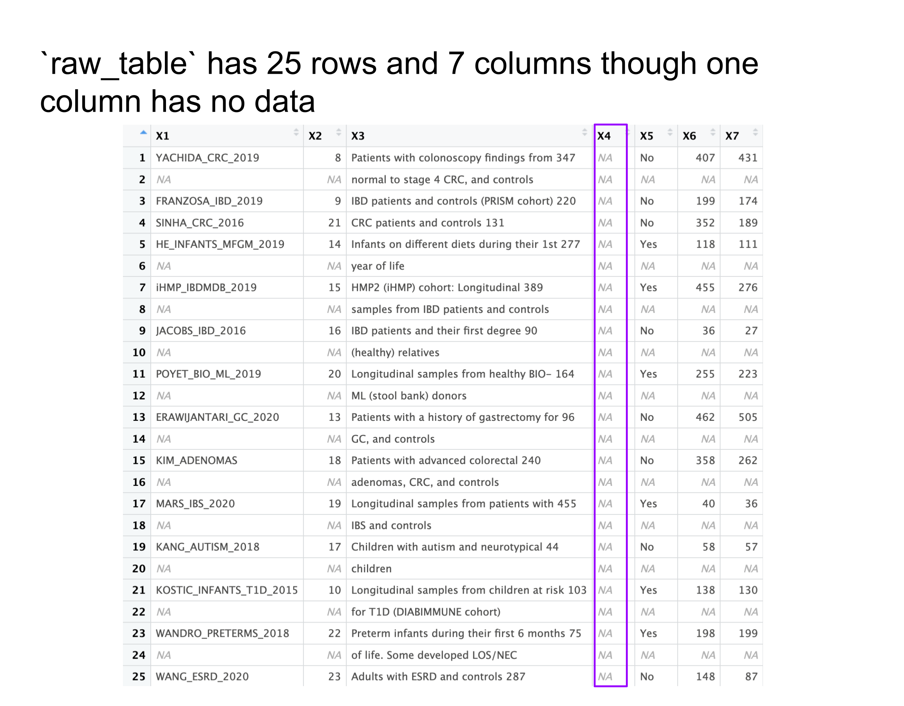
We would have expected the cohort descriptions to be in that third column and the number of paired samples to be in the fourth column. By more closely inspecting the data we have extracted, we instead see that X3 contains both the cohort descriptions (boxed in purple below) and the number of paired samples information (circled in teal below); the fourth column (X4) has all NAs. The number of paired samples information seems to have been appended to the end of the cohort description rather than being in its own column. In addition, we would have also expected the data to have only 14 rows, but instead we are observing 25 rows. Several rows have NAs in all columns except for the third column. This is because some of the longer cohort descriptions are being split across more than one row.
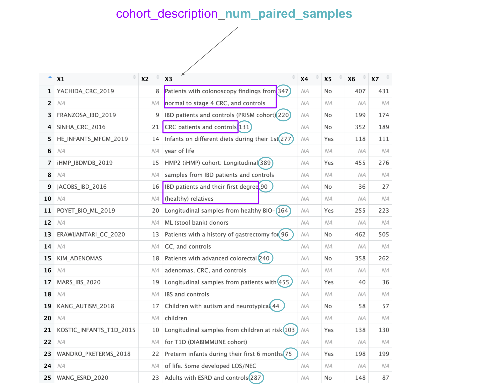
Notice also that none of the columns have descriptive names. Instead, the column names are X1, X2, … , X7.
Therefore, when we wrangle the data we will need to:
- Rename the columns, giving them descriptive variable names.
- Separate out the number of paired samples from the cohort descriptions, storing the two sets of data in different columns.
- Reunite the multiline cohort descriptions into a single line.
- Drop rows where the overflow cohort descriptions are but otherwise the rows have no other relevant data.
- Drop unnecessary columns. * The fourth/empty column * The column containing a mixture of cohort descriptions and the number of paired samples * Any unnecessary/intermediate columns we make while performing the previous wrangling steps
include click to expand section describing how to interact with the data in an RStudio / positron IDE if they have it and see these things
Data Wrangling
Container Application
If you have been following along but stopped, the scripts we are using are set up to load our imported data like so within our analysis script within the running container (without having to run the original extract_tables code). make sure your container is running (probably will need a tab structure for this): <- update to be more precise
Even if you stop the container (as long as you don’t delete it), you can restart it and the data will still be there as long as it was saved during wrangling
If you skipped the data import section click here.
KI note: We’ll need to add instructions to this about mounting or importing data if someone wants to pick up at this section. I don’t think the container has wget, but I could set up a download that would have the file that they could then mount. Will do that and include instructions here for that.
Wrangling the data
how to run analysis in running container
how to run analysis
Verifying the wrangled data
Question opportunity
What does the output from the messages in the script tell us about our wrangled data?:
Certain lines have certain information about the data – what are they reporting and what do we expect them to say?
- The dimensions of the data frame
- The number of NAs within the data frame
- The dataset name for the fourth row of data (spot checking a value)
Answer
If we were to inspect the table1_extract Data Frame, we would observe that the data now appears to match our expectations.
# A tibble: 14 × 7
dataset_name ref longitudinal hmdb_annotated_compo…¹ kegg_annotated_compo…²
<chr> <dbl> <chr> <dbl> <dbl>
1 YACHIDA_CRC… 8 No 407 431
2 FRANZOSA_IB… 9 No 199 174
3 SINHA_CRC_2… 21 No 352 189
4 HE_INFANTS_… 14 Yes 118 111
5 iHMP_IBDMDB… 15 Yes 455 276
6 JACOBS_IBD_… 16 No 36 27
7 POYET_BIO_M… 20 Yes 255 223
8 ERAWIJANTAR… 13 No 462 505
9 KIM_ADENOMAS 18 No 358 262
10 MARS_IBS_20… 19 Yes 40 36
11 KANG_AUTISM… 17 No 58 57
12 KOSTIC_INFA… 10 Yes 138 130
13 WANDRO_PRET… 22 Yes 198 199
14 WANG_ESRD_2… 23 No 148 87
# ℹ abbreviated names: ¹hmdb_annotated_compounds, ²kegg_annotated_compounds
# ℹ 2 more variables: num_paired_samples <dbl>, cohort_description <chr>There appear to be 14 rows and 7 columns, though those columns don’t follow the original order of Table 1 in Muller, Algavi, and Borenstein (2022). Since the columns have descriptive names though, it will be fine that they are not in the same order. While the columns may not be in the same order as the source data, the rows should be in the same order as the source data. Spot checking a specific value will help us to verify this.
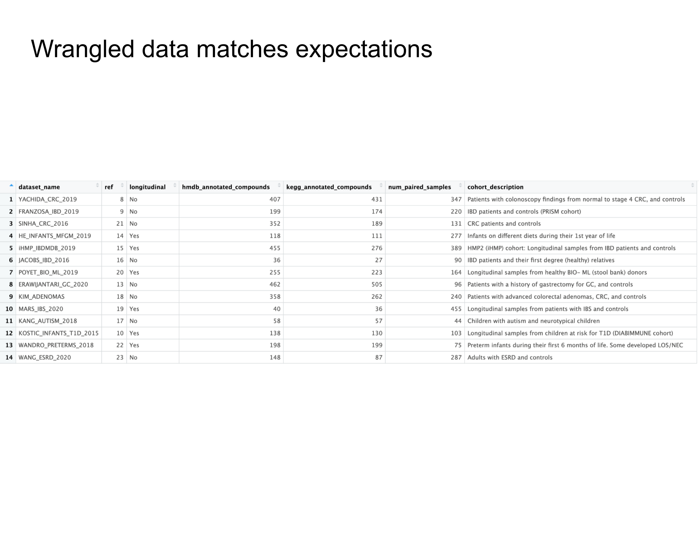
The log messages report the following:
Dimensions: 14 x 7
Number of NAs: 0
Dataset Name (Row 4): HE_INFANTS_MFGM_2019
The dimensions properly report a decrease in the number of rows compared to the raw extracted data (14 instead of 25), matching our expectation for both the number of rows and the number of columns given the source data. The dataset name in the fourth row is HE_INFANTS_MFGM_2019, again matching our expectations when comparing to the source data.
| Log message purpose | Expected | Observed |
|---|---|---|
| New dimensions | 14 x 7 | 14 x 7 |
| New number of NAs | 0 | 0 |
| Specific value check | HE_INFANTS_MFGM_2019 |
HE_INFANTS_MFGM_2019 |
To allow learners to skip import and wrangling in later sections, we will save the data as an RDA file as well as a CSV file as this is often useful to send our data to collaborators. We will save this in a “wrangled” subdirectory of our “data” directory of our working directory.
Question opportunity
A more generalizable and robust wrangling approach:
This wrangling approach using the lead function to assess if there is multiline data that needs combined assumes that there are only ever 1 - 2 rows for each cohort description. What changes to this process could be utilized that would be more generalizable or robust with data that doesn’t meet this assumption? Specifically, how could this process be changed to combine an unknown number of rows of data to the previous row when only one column has data?
Answer
One possible approach would:
- Use the
cumsum()function to assign a group ID to the rows. - Use the
group_by()function to group the data by that group ID. - With the
summarize()function,paste()the cohort descriptions within each group together. - Either bring along the non-NA data for the other columns within the
summarize()function, or join the datasets together using the group ID and drop unnecessary rows.
Planning data visualizations
Now that we’ve wrangled the extracted table data into a Data Frame, we want to plan out the visualizations we’ll make using this Data Frame!
Collab O. Rator’s email provided the following guidance regarding the data visualizations:
Specifically, I’d like to see scatter plots comparing the data from the final four columns for each dataset (No. samples w/ paired data, Longitudinal, No. HMDB-annotated compounds, and No. KEGG-annotated compounds).
Collab O. Rator’s instructions have asked us to visualize 4 variables or dimensions of the data with scatter plots. The axes (x- and y-) will account for two of those variables, and we can adjust the points (e.g., color or shape) to represent a third variable – likely the longitudinal value as this is categorical (“Yes” vs “No”). To visualize the fourth variable, we would need to add a third axis (z-) or some other means of encoding the data, but this adds to the complexity of the plot. Instead, we could make two separate panels.
| Plot element | Data column |
|---|---|
| x-axis | num_paired_samples |
| y-axis | hmdb_annotated_compounds or kegg_annotated_compounds |
| point color or shape | longitudinal |
| labels | dataset_name |
But if we make two separate scatter plots, they will be two separate plots/files that won’t be displayed next to each other unless we use design software like Illustrator to combine them later. Certain R packages allow you to combine plots and display them with each other. So let’s “wrangle” the Dockerfile to include a package that will let us do that: patchwork.
Could potentially have learners run the data visualization script that produces two separate data visualizations, but I think that’s best kept for the next section?
Container Infrastructure
As you can see from the visualization planning above, these two plots would be completely separate – and we’d like them to be visible next to each other. A useful R package for this purpose is patchwork. However, our data visualization Docker container doesn’t include that package.
Question opportunity
How can we add a package to a container?
Answer
There are multiple ways to add a package to a container.
If the container is running, we could install the package, and it will be usable/available, while we are using the running container (or if we pause and later restart that container). However, that package won’t be available to someone else who is using the same image that we used.
Another way to add a package to a container is to go back to the beginning definition of or recipe for that container (a Dockerfile), modify it, and then rebuild an image, and run the rebuilt image so that a new container has the additional package.
| Approach | Pro | Con |
|---|---|---|
| Install package in running container | Fast and we can continue our work quickly | Package not available to others using the same image we did |
| Modify the Dockerfile, then build, share, and run an image | All software we used is defined and available to others | Longer containerization process before we can continue our work |
Wanting to make sure that we’re practicing reproducibility best practices when working with containers, especially in a team environment, we’re going to add a package to our container by modifying the Dockerfile, rebuilding the image, and running the container from the new image.
Adding a package
Now we will add patchwork to the container – or at least get started with the process of adding the patchwork package to the container.
With your favorite text editor (e.g., RStudio, Visual Studio Code, Notepad++, etc.), modify the Dockerfile to also install the patchwork package.
Question opportunity
Is modifying the Dockerfile the only necessary step to add patchwork to the container?
Answer
No, just because a Dockerfile has the package listed doesn’t mean that our running container has that package.Planning containerization next steps
Question opportunity
How does this package become usable for us?:
Given what you know about the containerization process, what steps need to be done so that the patchwork package is available to use with the analysis scripts?
Answer
- Build the modified Dockerfile to be an image (will need to do this using a command line interface)
- Run the image to create a container (CLI or Docker Desktop), mounting the directory or volume that has the analysis scripts within the run command.
- That running container now has
patchworkavailable for use.
You could push the image after building it (in order to share it), but don’t need to do that in order to use the package within a running container. Definitely share it eventually so others in your team have access to all of the same software you used!
We will perform these next steps of the containerization process in the Data Visualization section.
Data Visualization
If you have been following along but stopped, the scripts we are using are set up to load our imported data like so within our analysis script within the running container (without having to run the original extract_tables code). Everyone is rerunning a new container at this section, so they should be good, just a reminder that the data should be there for them.
If you skipped the data import section click here.
KI note: We’ll need to add instructions to this about mounting or importing data if someone wants to pick up at this section. I don’t think the container has wget, but I could set up a download that would have the file that they could then mount. Will do that and include instructions here for that.
Container Infrastructure
Build the modified Dockerfile –> Image
Run the Image (while mounting the volume) – > Container
Build the modified Dockerfile –> Image
Run the Image (while mounting the volume) – > Container
Include a thought question to give learners the opportunity to build a flowchart (e.g., moving nouns and verbs into blanks) that represents the containerization process.
Container Application
We’ll use this section to make two scatter plots. And then combine the plots with patchwork, specifically using the modified container to run the code
Docker Desktop
In the running container, run the visualization script(s)
Look at the output
Docker through a CLI
In the running container, run the visualization script(s)
Look at the output
03a_visualization.R
#!/usr/bin/env Rscript
library(here)
library(tidyverse)
library(ggplot2)
load(here::here("data", "wrangled", "wrangled_data.rda"))
cat("Dimensions: ", paste(dim(table1_extract), collapse = " x "), "\n")
#HMDB plot
hmdb_scatter <- table1_extract %>%
mutate(longitudinal = factor(longitudinal, levels = c("No", "Yes"))) %>%
ggplot(aes(x = num_paired_samples,
y = hmdb_annotated_compounds,
color = longitudinal,
label = dataset_name)) +
geom_point(size = 2.5) +
geom_text(vjust = -0.5, size = 2.8, color = "black") +
scale_color_viridis_d(end = 0.6) +
labs(title = "Paired sample count vs HMDB annotation coverage",
x = "No. samples with paired data",
y = "HMDB Annotated compounds",
color = "Longitudinal") +
theme_minimal(base_size = 12) +
coord_fixed(ratio = 1)
#save the plot
output_dir <- here::here("results", "plots")
if (!dir.exists(output_dir)) {
dir.create(output_dir, recursive = TRUE)
}
ggsave(here::here(output_dir, "hmdb_scatter.png"))
cat("HMDB plot completed\n")
#KEGG plot
kegg_scatter <- table1_extract %>%
mutate(longitudinal = factor(longitudinal, levels = c("No", "Yes"))) %>%
ggplot(aes(x = num_paired_samples,
y = kegg_annotated_compounds,
color = longitudinal,
label = dataset_name)) +
geom_point(size = 2.5) +
geom_text(vjust = -0.5, size = 2.8, color = "black") +
scale_color_viridis_d(end = 0.6) +
labs(title = "Paired sample count vs KEGG annotation coverage",
x = "No. samples with paired data",
y = "KEGG Annotated compounds",
color = "Longitudinal") +
theme_minimal(base_size = 12) +
coord_fixed(ratio = 1)
#save the plot
ggsave(here::here(output_dir, "kegg_scatter.png"))
cat("KEGG plot completed\n")
#save the plot ggplot objects
save(hmdb_scatter, kegg_scatter,
file = here::here(output_dir,
"scatter_plots.rda"))
{kind=link}
{kind=link}
We can use ls plots/ to see that these png files exist. Though we’ll have to use the file explorer to save any of those files to our system. Is there an easy way besides basing an image off of an IDE like VSCode or RStudio?
03b_visualization.R
#!/usr/bin/env Rscript
library(here)
library(tidyverse)
library(ggplot2)
library(patchwork)
load(here::here("results", "plots", "scatter_plots.rda"))
hmdb_scatter + labs(title = NULL) +
kegg_scatter + labs(title = NULL) +
plot_layout(guides = "collect") +
plot_annotation(title = 'Paired sample count vs annotation coverage')
#save the plot
output_dir <- here::here("results", "plots")
if (!dir.exists(output_dir)) {
dir.create(output_dir, recursive = TRUE)
}
ggsave(here::here(output_dir, "combined_scatter.png"))
- Use the HMDB scatter plot from before, but remove its title
- Use the KEGG scatter plot from before, but remove its title
- Combine the legends
- Add a single title for the whole plot
We can again use ls plots/ to see the new png file that was saved. The logs should also say something about saving the file
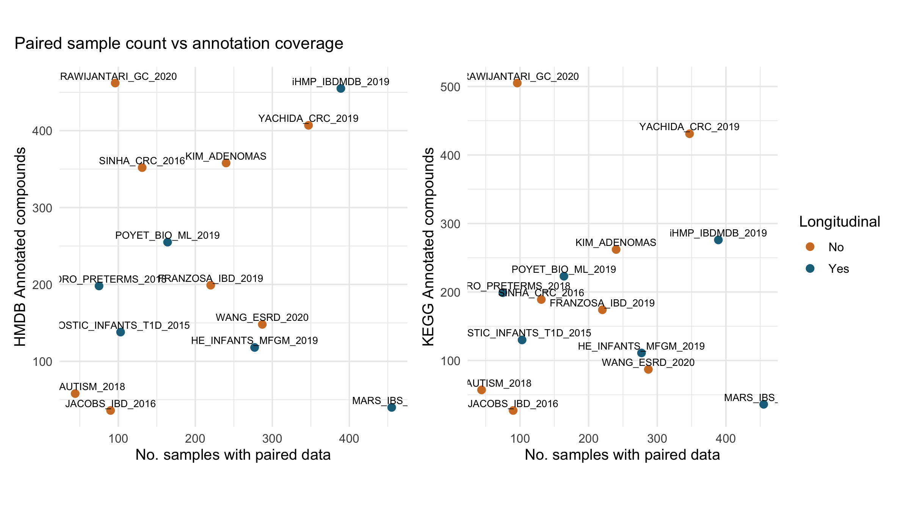
patchwork is a very useful package for combining plots. In this use case it isn’t strictly necessary because we could use pivot_longer to wrangle the data and facet_wrap to split out the scatter plots for the different annotations. We chose to use patchwork in this case for illustrative purposes on adding a package to a container in an approachable example.
Add a click to expand details section about using pivot_longer and facet_wrap instead of patchwork
Note that comparing plots can be pretty difficult and for someone who needs to validate the process, it’s going to be easier if there’s a summary stat. So what sort of summary stat should we add to the analysis?
Data Analysis
Container Application
Finding the correlation between different variables in the dataset
Looking at subsets of datasets for the same variables…
04_analysis_metric.R
#!/usr/bin/env Rscript
library(here)
library(tidyverse)
load(here("data", "wrangled", "wrangled_data.rda"))
cor_matrix_all <- table1_extract %>%
select(num_paired_samples,
kegg_annotated_compounds,
hmdb_annotated_compounds) %>%
cor(., method = "spearman")
#output information about the correlation analysis for all datasets
cat("All Datasets\n")
cat("Number of Datasets per variable in correlation analysis (All Data): ", nrow(table1_extract), "\n")
cat("Annoted Compounds Spearman Correlation (All Data): ", cor_matrix_all["kegg_annotated_compounds", "hmdb_annotated_compounds"], "\n")
cat("Number of samples and KEGG Annotated Compounds Spearman Corelation (All Data): ", cor_matrix_all["num_paired_samples", "kegg_annotated_compounds"], "\n")
cat("HMDB Annotated Compounds and Number of samples Spearman Correlation (All Data): ", cor_matrix_all["hmdb_annotated_compounds", "num_paired_samples"], "\n")
cor_matrix_non_longitudinal <- table1_extract %>%
filter(longitudinal == "No") %>%
select(num_paired_samples,
kegg_annotated_compounds,
hmdb_annotated_compounds) %>%
cor(., method = "spearman")
#output information about non-longitudinal datasets correlation analysis
cat("\nNon-longitudinal Datasets\n")
cat("Number of Datasets per variable in correlation analysis (Non-longitudinal Data): ", nrow(table1_extract %>% filter(longitudinal == "No")), "\n")
cat("Annoted Compounds Spearman Correlation (Non-longitudinal Data): ", cor_matrix_non_longitudinal["kegg_annotated_compounds", "hmdb_annotated_compounds"], "\n")
cat("Number of samples and KEGG Annotated Compounds Spearman Corelation (Non-longitudinal Data): ", cor_matrix_non_longitudinal["num_paired_samples", "kegg_annotated_compounds"], "\n")
cat("HMDB Annotated Compounds and Number of samples Spearman Correlation (Non-longitudinal Data): ", cor_matrix_non_longitudinal["hmdb_annotated_compounds", "num_paired_samples"], "\n")
cor_matrix_adult <- table1_extract %>%
filter(!str_detect(tolower(cohort_description),
"infants|children")) %>%
select(num_paired_samples,
kegg_annotated_compounds,
hmdb_annotated_compounds) %>%
cor(., method = "spearman")
#output information about the Adult only datasets correlation analysis
cat("\nAdult Datasets\n")
cat("Number of Datasets per variable in correlation analysis (Adult Data): ", nrow(table1_extract %>% filter(!str_detect(tolower(cohort_description), "infants|children"))), "\n")
cat("Annoted Compounds Spearman Correlation (Adult Data): ", cor_matrix_adult["kegg_annotated_compounds", "hmdb_annotated_compounds"], "\n")
cat("Number of samples and KEGG Annotated Compounds Spearman Corelation (Adult Data): ", cor_matrix_adult["num_paired_samples", "kegg_annotated_compounds"], "\n")
cat("HMDB Annotated Compounds and Number of samples Spearman Correlation (Adult Data): ", cor_matrix_adult["hmdb_annotated_compounds", "num_paired_samples"], "\n")
Ask learners to try to run the analysis
Ask learners to try to run the analysis
Look at the logs.
All Datasets
Number of Datasets per variable in correlation analysis (All Data): 14
Annoted Compounds Spearman Correlation (All Data): 0.9604396
Number of samples and KEGG Annotated Compounds Spearman Corelation (All Data): 0.1296703
HMDB Annotated Compounds and Number of samples Spearman Correlation (All Data): 0.2043956
Non-longitudinal Datasets
Number of Datasets per variable in correlation analysis (Non-longitudinal Data): 8
Annoted Compounds Spearman Correlation (Non-longitudinal Data): 1
Number of samples and KEGG Annotated Compounds Spearman Corelation (Non-longitudinal Data): 0.452381
HMDB Annotated Compounds and Number of samples Spearman Correlation (Non-longitudinal Data): 0.452381
Adult Datasets
Number of Datasets per variable in correlation analysis (Adult Data): 10
Annoted Compounds Spearman Correlation (Adult Data): 0.9757576
Number of samples and KEGG Annotated Compounds Spearman Corelation (Adult Data): 0.05454545
HMDB Annotated Compounds and Number of samples Spearman Correlation (Adult Data): 0.05454545
Container Infrastructure
In this section we can discuss that someone else (maybe the person validating the work for resubmission) can use the container to run the analysis and get the exact same results and plot that you made because of the container. Specifically, what should you share with someone so they can rerun the analysis?
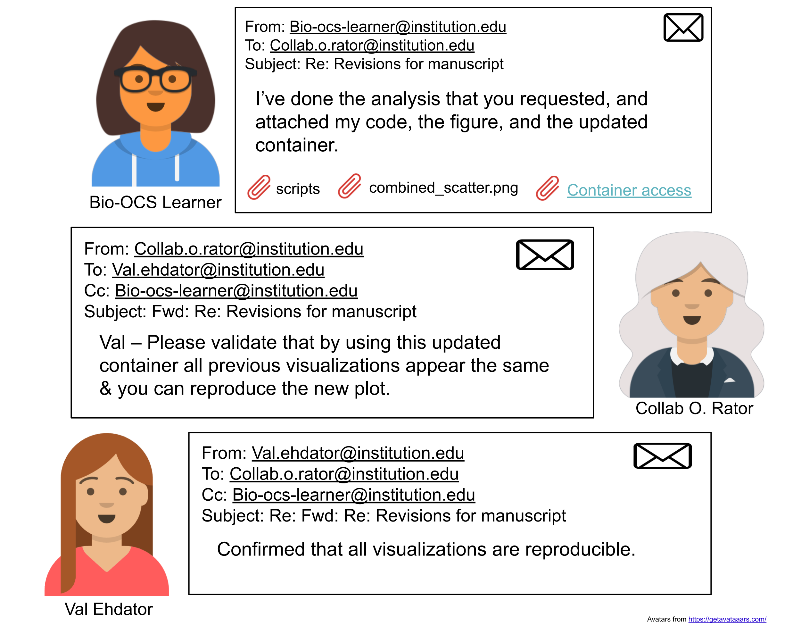
Dockerfile
FROM rocker/tidyverse:4.5.3@sha256:913d87bd9b81480b97bd4fc18e619e71d12b0a034bc80bb841830ac10278fd1a
ENV DEBIAN_FRONTEND=noninteractive
ENV JAVA_HOME=/usr/lib/jvm/java-11-openjdk-current
ENV PATH=/usr/lib/jvm/java-11-openjdk-current/bin:${PATH}
RUN apt-get update \
&& apt-get install -y --no-install-recommends \
openjdk-11-jdk \
wget \
libpng-dev \
libicu-dev \
libpcre2-dev \
libdeflate-dev \
libzstd-dev \
liblzma-dev \
libbz2-dev \
zlib1g-dev \
&& arch="$(dpkg --print-architecture)" \
&& ln -sfn "/usr/lib/jvm/java-11-openjdk-${arch}" "${JAVA_HOME}" \
&& printf 'JAVA_HOME=%s\n' "${JAVA_HOME}" >> /usr/local/lib/R/etc/Renviron.site \
&& R CMD javareconf \
&& rm -rf /var/lib/apt/lists/*
RUN install2.r --error --deps TRUE \
rJava \
tabulapdf \
here \
bubbleHeatmap \
ggnetwork \
ggpubr \
gt \
patchwork
Sharing the container image vs sharing the Dockerfile
run_analysis.sh
#!/bin/bash
echo "Extracting data"
mkdir -p ../results/logs
Rscript 01_extract_data.R > ../results/logs/data_extraction_logs.txt
echo "Wrangling data"
Rscript 02_wrangle.R > ../results/logs/wrangling_logs.txt
echo "Visualizing data"
Rscript 03a_visualization.R > ../results/logs/visualization_logs.txt
Rscript 03b_visualization_patchwork.R >> ../results/logs/visualization_logs.txt
echo "Analyzing data"
Rscript 04_analysis_metric.R > ../results/logs/analysis_logs.txt
echo "Process complete"
Rscript -e "$(cat *.R | grep "library" | sort -u | xargs printf "%s; ") sessionInfo()" > ../results/logs/session_info.txt
Reproducibility considerations
Having a “run all” script that specifies what scripts were used and in what order for the analysis is a best practice for reproducibility (Wilson et al. 2017).
We’ll also discuss how to document where the scripts are, how to mount a volume (with analysis scripts) and point out that the validator can get the same results as the learner did by running the run_analysis.sh script.
Add a reproducibility box about pushing the new / adjusted scripts and plots as well as the documentation to the scaffold repo that they “used as a template/cloned” if they did the earlier extra reproducibility step.
Summary
Synopsis
So if you do need to use a container:
- It’s going to be hard
- Your needs may be beyond what’s covered in this resource … look at additional information for more resources
But maybe you don’t need a container … include some sort of flowchart with recommendations on when you would use a container vs just using session information or something like that
Highlight what we did and summarize what we learned
Summary Plot
Main Questions Revisited
NoteMain Questions Revisited: What Did We Learn
| Question | Current answer | Caveat |
|---|---|---|
| Reiteration or restatement of main question | Describe the answer based on case study activities | List any important caveats potentially connecting to earlier limitations |
| Another main question | Description of its activity | Caveats for this Q & A |
| Another of the main questions | Another description of this one’s activity | Q & A specific caveats |
Troubleshooting Containers
Working with containers, you may encounter issues and error messages.
Continued Learning
Common Next Steps
Discuss common next steps for this type of an analysis in this box. Is there a specific number of steps that you need to do before a specific step? Is a “next step” more of an alternate step?
Reinforcement Exercises
Point out that text labels are overlapping each other in the right panel, and clipped on axis limits for both panels. The ggrepel package can be useful in fixing these problems.
- Add
ggrepelto the Dockerfile- build the Dockerfile
- run the image
- extract and wrangle the data with the
preprocessing.Rscript or mount the wrangled data when running the image - update the
analysis.Rscript to utilizeggrepelwithin the scatter plots made withpatchwork - and rerun the analysis with the modified container
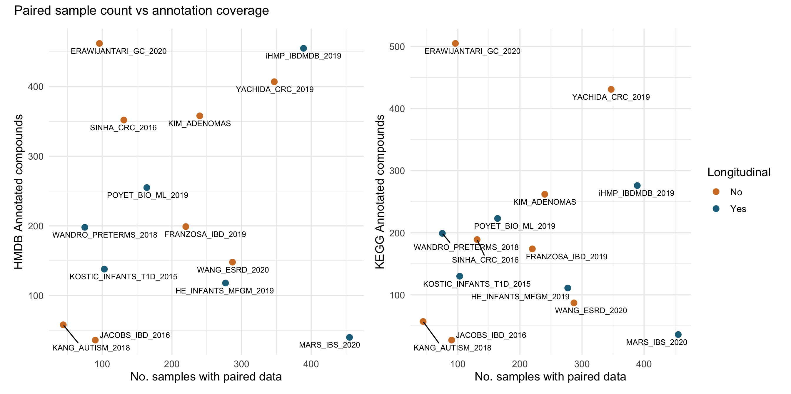
Advancement Exercises
Use this section to suggest different levels of exercises that build upon topics from the case study … next steps, tangential skills, diving deeper into a side quest, etc.
Perhaps explain how the suggested exercises relate to the common next steps.
Beginner
Point out that the scatter plot loses the description about each dataset. We can add some interactivity with plotly that will allow us to display info like the dataset description when we hover over the points.
Edit the Dockerfile to install R plotly and htmlwidgets packages from github (using Pak)
- https://github.com/plotly/plotly.R
- https://github.com/ramnathv/htmlwidgets
Have them create a script that runs plotly to create an interactive graph that highlights points by adding this code to it and then add that script to the run_analysis.sh script
library(plotly)
library(htmlwidgets)
library(here)
library(tidyverse)
load(here("data", "wrangled", "wrangled_data.rda"))
table1_extract <- table1_extract %>%
mutate(longitudinal = case_when(longitudinal == "Yes" ~ "Longitudinal",
longitudinal == "No" ~ "Not longitudinal",
TRUE ~ "Unknown"))
hover_text_template <- paste(
"<b>Dataset:</b> %{text}<br>",
"<b>Description:</b> %{customdata}",
"<extra></extra>"
)
plotly_plot_hmdb <- table1_extract %>%
plotly::plot_ly(
x = ~num_paired_samples,
y = ~hmdb_annotated_compounds,
color = ~longitudinal,
text = ~dataset_name, # Point label text
customdata = ~cohort_description, # Hover description storage
legendgroup = ~longitudinal,
showlegend = FALSE,
type = 'scatter',
mode = "markers+text",
textposition = "top center",
hovertemplate = hover_text_template # Set hover text
) %>%
plotly::layout(
title = 'Paired sample count vs HMDB annotation coverage',
xaxis = list(title = 'No. samples with paired data'),
yaxis = list(title = 'HMDB Annotated compounds')
)
plotly_plot_kegg <- table1_extract %>%
plotly::plot_ly(
x = ~num_paired_samples,
y = ~kegg_annotated_compounds,
color = ~longitudinal,
text = ~dataset_name,
customdata = ~cohort_description,
legendgroup = ~longitudinal,
showlegend = TRUE,
type = 'scatter',
mode = "markers+text",
textposition = "top center",
hovertemplate = hover_text_template
) %>%
plotly::layout(
title = 'Paired sample count vs KEGG annotation coverage',
xaxis = list(title = 'No. samples with paired data'),
yaxis = list(title = 'KEGG Annotated compounds')
)
combined_plot <- subplot(style(plotly_plot_hmdb, showlegend = F),
plotly_plot_kegg) %>%
highlight(on = "plotly_hover",
off = "plotly_doubleclick",
persistent = FALSE,
dynamic = FALSE) %>%
layout(title = "Paired sample count vs annotation coverage")
output_dir <- here::here("results", "plots")
if (!dir.exists(output_dir)) {
dir.create(output_dir, recursive = TRUE)
}
saveWidget(combined_plot,
file = here(output_dir, "interactive_combined_plot.html"),
selfcontained = TRUE)Point them to the ITN courses for templates/recipes on adding packages to a Dockerfile.
Intermediate
Create a Dockerfile from scratch which could be used to perform a similar analysis with Python.
- https://pypi.org/project/tabula-py/
- pandas
- matplotlib
- https://github.com/ponnhide/patchworklib
- https://github.com/Phlya/adjustText
- https://pypi.org/project/pytruncreg/
Add in an AI box to note that AI can often be helpful in refactoring code if they wanted to test out the process.
Alternatively, find an image on Docker Hub that would meet their needs.
Point them to the ITN capstone course if they wanted to develop a Dockerfile for their own research needs.
Advanced
Use a container together with GitHub actions to extract the PDF data and make the visualization.
Again point them to the ITN capstone course if they wanted to develop this for their own research needs.
Additional Information
We’ll include information in this section about
- Security
- Versioning
- Sizes and not overburdening your system
Helpful Links
- ITCR Containers course
- other resources
Terms and concepts covered:
Packages used in this case study:
Glossary
| Term | Definition |
|---|---|
| Term 1 | Definition of Term 1 |
| Term2 | Definition of Term 2 |
References
Barker, Michelle, Neil P. Chue Hong, Daniel S. Katz, Anna-Lena Lamprecht, Carlos Martinez-Ortiz, Fotis Psomopoulos, Jennifer Harrow, et al. 2022. “Introducing the FAIR Principles for Research Software.” Scientific Data 9 (1): 622. https://doi.org/10.1038/s41597-022-01710-x.
Cheng, Cindy, Luca Messerschmidt, Isaac Bravo, Marco Waldbauer, Rohan Bhavikatti, Caress Schenk, Vanja Grujic, Tim Model, Robert Kubinec, and Joan Barceló. 2024. “A General Primer for Data Harmonization.” Scientific Data 11 (1): 152. https://doi.org/10.1038/s41597-024-02956-3.
Conroy, Matthew J, Robert M Andrews, Simon Andrews, Lauren Cockayne, Edward A Dennis, Eoin Fahy, Caroline Gaud, et al. 2024. “LIPID MAPS: Update to Databases and Tools for the Lipidomics Community.” Nucleic Acids Research 52 (D1): D1677–82. https://doi.org/10.1093/nar/gkad896.
Cooper, Geoffrey M. 2000. “The Molecular Composition of Cells.” In The Cell: A Molecular Approach. 2nd Edition. Sinauer Associates. https://www.ncbi.nlm.nih.gov/books/NBK9879/.
Garg, Eshita, and Muhammad Zubair. 2026. “Mass Spectrometer.” In StatPearls. Treasure Island (FL): StatPearls Publishing. http://www.ncbi.nlm.nih.gov/books/NBK589702/.
Kanehisa, Minoru, Miho Furumichi, Yoko Sato, Yuriko Matsuura, and Mari Ishiguro-Watanabe. 2025. “KEGG: Biological Systems Database as a Model of the Real World.” Nucleic Acids Research 53 (D1): D672–77. https://doi.org/10.1093/nar/gkae909.
Kanehisa, Minoru, and Susumu Goto. 2000. “KEGG: Kyoto Encyclopedia of Genes and Genomes.” Nucleic Acids Research 28 (1): 27–30. https://doi.org/10.1093/nar/28.1.27.
Karu, Naama, Lu Deng, Mordechai Slae, An Chi Guo, Tanvir Sajed, Hien Huynh, Eytan Wine, and David S. Wishart. 2018. “A Review on Human Fecal Metabolomics: Methods, Applications and the Human Fecal Metabolome Database.” Analytica Chimica Acta 1030 (November): 1–24. https://doi.org/10.1016/j.aca.2018.05.031.
Liu, Juan, Yuzhu Tan, Hao Cheng, Dandan Zhang, Wuwen Feng, and Cheng Peng. 2022. “Functions of Gut Microbiota Metabolites, Current Status and Future Perspectives.” Aging and Disease 13 (4): 1106–26. https://doi.org/10.14336/AD.2022.0104.
Lu, Wenyun, Xiaoyang Su, Matthias S. Klein, Ian A. Lewis, Oliver Fiehn, and Joshua D. Rabinowitz. 2017. “Metabolite Measurement: Pitfalls to Avoid and Practices to Follow.” Annual Review of Biochemistry 86: 277–304. https://doi.org/10.1146/annurev-biochem-061516-044952.
Marion, Dominique. 2013. “An Introduction to Biological NMR Spectroscopy.” Molecular & Cellular Proteomics : MCP 12 (11): 3006–25. https://doi.org/10.1074/mcp.O113.030239.
“MassBank of North America (MoNA) - PubChem Data Source.” n.d. https://pubchem.ncbi.nlm.nih.gov/source/22043.
Moreno-Ulloa, Aldo. 2026. “Definition of Metabolite: Size as a Critical Criterion.” Journal of Proteome Research 25 (3): 1244–52. https://doi.org/10.1021/acs.jproteome.5c00747.
Muller, Efrat, Yadid M. Algavi, and Elhanan Borenstein. 2022. “The Gut Microbiome-Metabolome Dataset Collection: A Curated Resource for Integrative Meta-Analysis.” Npj Biofilms and Microbiomes 8 (1): 79. https://doi.org/10.1038/s41522-022-00345-5.
Nan, Yang, Javier Del Ser, Simon Walsh, Carola Schönlieb, Michael Roberts, Ian Selby, Kit Howard, et al. 2022. “Data Harmonisation for Information Fusion in Digital Healthcare: A State-of-the-Art Systematic Review, Meta-Analysis and Future Research Directions.” Information Fusion 82: 99–122. https://doi.org/10.1016/j.inffus.2022.01.001.
Petersen, Alexander M., Ioannis Pavlidis, and Ioanna Semendeferi. 2014. “A Quantitative Perspective on Ethics in Large Team Science.” Science and Engineering Ethics 20 (4): 923–45. https://doi.org/10.1007/s11948-014-9562-8.
Sandve, Geir Kjetil, Anton Nekrutenko, James Taylor, and Eivind Hovig. 2013. “Ten Simple Rules for Reproducible Computational Research.” PLOS Computational Biology 9 (10): e1003285. https://doi.org/10.1371/journal.pcbi.1003285.
Schloss, Patrick D. 2018. “Identifying and Overcoming Threats to Reproducibility, Replicability, Robustness, and Generalizability in Microbiome Research.” mBio 9 (3): 10.1128/mbio.00525–18. https://doi.org/10.1128/mbio.00525-18.
Son, Ahrum, Woojin Kim, Jongham Park, Yongho Park, Wonseok Lee, Sangwoon Lee, and Hyunsoo Kim. 2024. “Mass Spectrometry Advancements and Applications for Biomarker Discovery, Diagnostic Innovations, and Personalized Medicine.” International Journal of Molecular Sciences 25 (18): 9880. https://doi.org/10.3390/ijms25189880.
Sterling, Robyn L. 2011. “Genetic Research Among the Havasupai: A Cautionary Tale.” AMA Journal of Ethics 13 (2): 113–17. https://doi.org/10.1001/virtualmentor.2011.13.2.hlaw1-1102.
Wilkinson, Mark D., Michel Dumontier, IJsbrand Jan Aalbersberg, Gabrielle Appleton, Myles Axton, Arie Baak, Niklas Blomberg, et al. 2016. “The FAIR Guiding Principles for Scientific Data Management and Stewardship.” Scientific Data 3 (1): 160018. https://doi.org/10.1038/sdata.2016.18.
Wilson, Greg, Jennifer Bryan, Karen Cranston, Justin Kitzes, Lex Nederbragt, and Tracy K. Teal. 2017. “Good Enough Practices in Scientific Computing.” PLOS Computational Biology 13 (6): e1005510. https://doi.org/10.1371/journal.pcbi.1005510.
Wishart, David S., Craig Knox, An Chi Guo, Roman Eisner, Nelson Young, Bijaya Gautam, David D. Hau, et al. 2009. “HMDB: A Knowledgebase for the Human Metabolome.” Nucleic Acids Research 37 (Database issue): D603–10. https://doi.org/10.1093/nar/gkn810.
Wright, Carrie. n.d. Chapter 4 Computing Resources | Computing for Cancer Informatics. https://jhudatascience.org/Computing_for_Cancer_Informatics/computing-resources.html.
Session Info
For the container infrastructure and application steps within this case study
R version 4.5.3 (2026-03-11)
Platform: x86_64-pc-linux-gnu
Running under: Ubuntu 24.04.4 LTS
Matrix products: default
BLAS: /usr/lib/x86_64-linux-gnu/openblas-pthread/libblas.so.3
LAPACK: /usr/lib/x86_64-linux-gnu/openblas-pthread/libopenblasp-r0.3.26.so; LAPACK version 3.12.0
locale:
[1] LC_CTYPE=en_US.UTF-8 LC_NUMERIC=C
[3] LC_TIME=en_US.UTF-8 LC_COLLATE=en_US.UTF-8
[5] LC_MONETARY=en_US.UTF-8 LC_MESSAGES=en_US.UTF-8
[7] LC_PAPER=en_US.UTF-8 LC_NAME=en_US.UTF-8
[9] LC_ADDRESS=en_US.UTF-8 LC_TELEPHONE=en_US.UTF-8
[11] LC_MEASUREMENT=en_US.UTF-8 LC_IDENTIFICATION=en_US.UTF-8
time zone: Etc/UTC
tzcode source: system (glibc)
attached base packages:
[1] stats graphics grDevices utils datasets methods base
other attached packages:
[1] lubridate_1.9.5 forcats_1.0.1 stringr_1.6.0 dplyr_1.2.1
[5] purrr_1.2.2 tidyr_1.3.2 tibble_3.3.1 tidyverse_2.0.0
[9] tabulapdf_1.0.5-5 readr_2.2.0 patchwork_1.3.2 here_1.0.2
[13] ggplot2_4.0.3
loaded via a namespace (and not attached):
[1] gtable_0.3.6 compiler_4.5.3 tidyselect_1.2.1 scales_1.4.0
[5] png_0.1-9 R6_2.6.1 generics_0.1.4 rprojroot_2.1.1
[9] pillar_1.11.1 RColorBrewer_1.1-3 tzdb_0.5.0 rlang_1.2.0
[13] stringi_1.8.7 S7_0.2.2 timechange_0.4.0 cli_3.6.6
[17] withr_3.0.2 magrittr_2.0.5 grid_4.5.3 rJava_1.0-18
[21] hms_1.1.4 lifecycle_1.0.5 vctrs_0.7.3 glue_1.8.1
[25] farver_2.1.2 tools_4.5.3 pkgconfig_2.0.3
For publishing of this case study
─ Session info ───────────────────────────────────────────────────────────────
setting value
version R version 4.3.2 (2023-10-31)
os Ubuntu 22.04.4 LTS
system x86_64, linux-gnu
ui X11
language (EN)
collate en_US.UTF-8
ctype en_US.UTF-8
tz Etc/UTC
date 2026-09-04
pandoc 3.1.1 @ /usr/local/bin/ (via rmarkdown)
─ Packages ───────────────────────────────────────────────────────────────────
package * version date (UTC) lib source
bit 4.0.5 2022-11-15 [1] RSPM (R 4.3.0)
bit64 4.0.5 2020-08-30 [1] RSPM (R 4.3.0)
cachem 1.0.8 2023-05-01 [1] RSPM (R 4.3.0)
chromote 0.5.1 2025-04-24 [1] CRAN (R 4.3.2)
cli 3.6.5 2025-04-23 [1] CRAN (R 4.3.2)
colorspace 2.1-0 2023-01-23 [1] RSPM (R 4.3.0)
crayon 1.5.2 2022-09-29 [1] RSPM (R 4.3.0)
curl 7.0.0 2025-08-19 [1] CRAN (R 4.3.2)
devtools 2.4.5 2022-10-11 [1] RSPM (R 4.3.0)
digest 0.6.34 2024-01-11 [1] RSPM (R 4.3.0)
dplyr * 1.1.4 2023-11-17 [1] RSPM (R 4.3.0)
ellipsis 0.3.2 2021-04-29 [1] RSPM (R 4.3.0)
evaluate 1.0.5 2025-08-27 [1] CRAN (R 4.3.2)
fansi 1.0.6 2023-12-08 [1] RSPM (R 4.3.0)
fastmap 1.1.1 2023-02-24 [1] RSPM (R 4.3.0)
forcats * 1.0.0 2023-01-29 [1] RSPM (R 4.3.0)
fs 1.6.3 2023-07-20 [1] RSPM (R 4.3.0)
generics 0.1.3 2022-07-05 [1] RSPM (R 4.3.0)
ggplot2 * 3.5.0 2024-02-23 [1] RSPM (R 4.3.0)
gitcreds 0.1.2 2022-09-08 [1] RSPM (R 4.3.0)
glue 1.7.0 2024-01-09 [1] RSPM (R 4.3.0)
gtable 0.3.4 2023-08-21 [1] RSPM (R 4.3.0)
hms 1.1.3 2023-03-21 [1] RSPM (R 4.3.0)
htmltools 0.5.7 2023-11-03 [1] RSPM (R 4.3.0)
htmlwidgets 1.6.4 2023-12-06 [1] RSPM (R 4.3.0)
httpuv 1.6.14 2024-01-26 [1] RSPM (R 4.3.0)
httr 1.4.7 2023-08-15 [1] RSPM (R 4.3.0)
jsonlite 2.0.0 2025-03-27 [1] CRAN (R 4.3.2)
knitr 1.50 2025-03-16 [1] CRAN (R 4.3.2)
later 1.3.2 2023-12-06 [1] RSPM (R 4.3.0)
lifecycle 1.0.4 2023-11-07 [1] RSPM (R 4.3.0)
lubridate * 1.9.3 2023-09-27 [1] RSPM (R 4.3.0)
magrittr 2.0.3 2022-03-30 [1] RSPM (R 4.3.0)
memoise 2.0.1 2021-11-26 [1] RSPM (R 4.3.0)
mime 0.12 2021-09-28 [1] RSPM (R 4.3.0)
miniUI 0.1.1.1 2018-05-18 [1] RSPM (R 4.3.0)
munsell 0.5.0 2018-06-12 [1] RSPM (R 4.3.0)
ottrpal 2.0.0 2025-12-16 [1] Github (ottrproject/ottrpal@6d1267e)
pillar 1.9.0 2023-03-22 [1] RSPM (R 4.3.0)
pkgbuild 1.4.3 2023-12-10 [1] RSPM (R 4.3.0)
pkgconfig 2.0.3 2019-09-22 [1] RSPM (R 4.3.0)
pkgload 1.4.1 2025-09-23 [1] CRAN (R 4.3.2)
png 0.1-8 2022-11-29 [1] CRAN (R 4.3.2)
processx 3.8.6 2025-02-21 [1] CRAN (R 4.3.2)
profvis 0.3.8 2023-05-02 [1] RSPM (R 4.3.0)
promises 1.2.1 2023-08-10 [1] RSPM (R 4.3.0)
ps 1.9.1 2025-04-12 [1] CRAN (R 4.3.2)
purrr * 1.0.2 2023-08-10 [1] RSPM (R 4.3.0)
R6 2.6.1 2025-02-15 [1] CRAN (R 4.3.2)
Rcpp 1.0.12 2024-01-09 [1] RSPM (R 4.3.0)
readr * 2.1.5 2024-01-10 [1] RSPM (R 4.3.0)
remotes 2.4.2.1 2023-07-18 [1] RSPM (R 4.3.0)
rlang 1.1.6 2025-04-11 [1] CRAN (R 4.3.2)
rmarkdown 2.25 2023-09-18 [1] RSPM (R 4.3.0)
rprojroot 2.1.1 2025-08-26 [1] CRAN (R 4.3.2)
rvest 1.0.5 2025-08-29 [1] CRAN (R 4.3.2)
scales 1.3.0 2023-11-28 [1] RSPM (R 4.3.0)
sessioninfo 1.2.2 2021-12-06 [1] RSPM (R 4.3.0)
shiny 1.8.0 2023-11-17 [1] RSPM (R 4.3.0)
spelling 2.3.2 2025-08-18 [1] CRAN (R 4.3.2)
stringi 1.8.3 2023-12-11 [1] RSPM (R 4.3.0)
stringr * 1.5.1 2023-11-14 [1] RSPM (R 4.3.0)
tibble * 3.3.0 2025-06-08 [1] CRAN (R 4.3.2)
tidyr * 1.3.1 2024-01-24 [1] RSPM (R 4.3.0)
tidyselect 1.2.0 2022-10-10 [1] RSPM (R 4.3.0)
tidyverse * 2.0.0 2023-02-22 [1] RSPM (R 4.3.0)
timechange 0.3.0 2024-01-18 [1] RSPM (R 4.3.0)
tzdb 0.4.0 2023-05-12 [1] RSPM (R 4.3.0)
urlchecker 1.0.1 2021-11-30 [1] RSPM (R 4.3.0)
usethis 2.2.3 2024-02-19 [1] RSPM (R 4.3.0)
utf8 1.2.4 2023-10-22 [1] RSPM (R 4.3.0)
vctrs 0.6.5 2023-12-01 [1] RSPM (R 4.3.0)
vroom 1.6.5 2023-12-05 [1] RSPM (R 4.3.0)
webshot2 0.1.2 2025-04-23 [1] CRAN (R 4.3.2)
websocket 1.4.4 2025-04-10 [1] CRAN (R 4.3.2)
withr 3.0.2 2024-10-28 [1] CRAN (R 4.3.2)
xfun 0.55 2025-12-16 [1] CRAN (R 4.3.2)
xml2 1.5.1 2025-12-01 [1] CRAN (R 4.3.2)
xtable 1.8-4 2019-04-21 [1] RSPM (R 4.3.0)
yaml * 2.3.12 2025-12-10 [1] CRAN (R 4.3.2)
[1] /usr/local/lib/R/site-library
[2] /usr/local/lib/R/library
──────────────────────────────────────────────────────────────────────────────Acknowledgments
We would also like to acknowledge the National Institute of General Medical Sciences for funding this work (1R25GM160622).
Icons are from iconpacks.